import pandas as pd
import numpy as np
import pickle
from siuba import *
import plydata as pr
from plydata.tidy import pivot_wider, pivot_longer
from plotnine import *
from mizani.formatters import comma_format, dollar_format
from plotnine.data import mpg
from mlxtend.feature_selection import ColumnSelector
from sklearn.compose import ColumnTransformer
from sklearn.preprocessing import StandardScaler, OneHotEncoder
from sklearn.linear_model import LinearRegression
from sklearn.pipeline import Pipeline
from sklearn.metrics import mean_absolute_error, mean_absolute_percentage_error
from sklearn.metrics import mean_squared_error, r2_score, make_scorer
from sklearn.model_selection import train_test_split, KFold, cross_val_score, cross_validate
from plydata.one_table_verbs import pull
from mizani.formatters import comma_format, dollar_format
import statsmodels.api as sm
from sklearn.neighbors import KNeighborsRegressor
from sklearn.model_selection import GridSearchCV
from sklearn.utils import shuffle
from sklearn.preprocessing import RobustScaler
from sklearn.ensemble import RandomForestRegressor
from plydata.tidy import pivot_longer
from sklearn.preprocessing import FunctionTransformerProyecto final v3 Curso Introducción a la Ciencia de Datos
Predicción de precios de casas en Ames, Iowa
Proyecto Análisis de la base ames.csv para predicción de precios de venta
1. Objetivo: Predicción de los precios de venta de hogares en Ames, Iowa.
El objetivo es desarrollar un modelo que prediga el precio de venta de una determinada casa en Ames, Iowa. Se asume, para este proyecto final del curso Introducción a la Ciencia de Datos, AMAT, https://www.amat.mx/ que los interesados en el informe esperan conocer si el precio al que se ofrece una casa está por encima o por debajo de su valor real. Se espera que aquellas subvaluadas representen una oportunidad de inversión.
Para llevar a cabo una predicción del precio de venta, lo más precisa posible, es necesario aplicar las herramientas de Machine Learning que van desde el conocimiento del contenido, y contexto de la información, complementarla en caso necesario, hasta un análisis exploratorio (EDA y GEDA), desarrollo de hipótesis, implementación de algoritmos y modelos matemáticos.
Destacamos en el análisis exploratorio los siguientes puntos que deberemos alcanzar en este proyecto:
Maximizar el conocimiento de nuestro conjunto de datos (base ames.csv).
Descubrir la estructura subyacente de los datos.
Extraer variables importantes.
Detectar valores atípicos y anomalías.
Probar los supuestos subyacentes.
2. Contexto de los datos
La base de datos que se requiere se encuentra contenida en el archivo ames.csv. El presente proyecto desarrolla el modelo de predicción, fundamentado a su vez en predictores numéricos y categóricos correspondientes a diferentes características de las viviendas de Ames, Iowa.
El archivo ames.csv contiene 74 variables, como se indicó, tanto numéricas como categóricas, y 2,930 registros.
3. Descripción de las variables
| Variable | Descripción |
|---|---|
| MS_SubClass | Características de la vivienda |
| MS_Zoning | Zona en que se encuentra |
| Lot_Frontage | Medida del frente en pies |
| Lot_Area | Superficie en pies cuadrados |
| Street | Tipo de camino de acceso |
| Alley | Tipo de callejón |
| Lot_Shape | Forma de la vivienda |
| Land_Contour | Tipo de superficie |
| Utilities | Servicios disponibles |
| Lot_Config | Configuración de la vivienda |
| Land_Slope | Pendiente del terreno |
| Neighborhood | Barrio o colonia |
| Condition_1 | Vialidades adyacentes 1 |
| Condition_2 | Vialidades adyacentes 2 |
| Bldg_Type | Tipo de construcción |
| House_Style | Tipo de vivienda |
| Overall_Cond | Estado general |
| Year_Built | Año de construcción |
| Year_Remod_Add | Año de remodelación |
| Roof_Style | Tipo de techo |
| Roof_Matl | Material del techo |
| Exterior_1st | Tipo de fachada 1 |
| Exterior_2nd | Tipo de fachada 2 |
| Mas_Vnr_Type | Chapa mampostería tipo |
| Mas_Vnr_Area | Chapa mampostería área |
| Exter_Cond | Calidad de material exterior |
| Foundation | Tipo de cimientos |
| Bsmt_Cond | Estado del sótano |
| Bsmt_Exposure | Tipo de exposición del sótano |
| BsmtFin_Type_1 | Rating 1 de acabados del sótano |
| BsmtFin_SF_1 | Pies cuadrados del sótano tipo 1 |
| BsmtFin_Type_2 | Rating 2 de acabados del sótano |
| BsmtFin_SF_2 | Pies cuadrados del sótano tipo 2 |
| Bsmt_Unf_SF | Pies cuadrados sin acabados del sótano |
| Total_Bsmt_SF | Area del sótano en pies cuadrados |
| Heating | Tipo de calefacción |
| Heating_QC | Calidad y estado de la calefacción |
| Central_Air | Aire acondicionado central |
| Electrical | Sistema de electricidad |
| First_Flr_SF | Pies cuadrados del primer piso |
| Second_Flr_SF | Pies cuadrados del segundo piso |
| Gr_Liv_Area | Superficie habitable |
| Bsmt_Full_Bath | Baños completos en el sótano |
| Bsmt_Half_Bath | Medios baños en el sótano |
| Full_Bath | Baños completos |
| Half_Bath | Medios baños |
| Bedroom_AbvGr | Recámaras |
| Kitchen_AbvGr | Cocina |
| TotRms_AbvGrd | Recámaras |
| Functional | Características funcionales del hogar |
| Fireplaces | Chimeneas |
| Garage_Type | Tipo del garage |
| Garage_Finish | Acabado interior del garage |
| Garage_Cars | Espacio en el garage |
| Garage_Area | Área del garage en pies cuadrados |
| Garage_Cond | Estado del garage |
| Paved_Drive | Camino pavimentado |
| Wood_Deck_SF | Terraza de madera en pies cuadrados |
| Open_Porch_SF | Cobertizo abierto en pies cuadrados |
| Enclosed_Porch | Cobertizo cerrado en pies cuadrados |
| Three_season_porch | Cobertizo modalidad “tres temporadas” |
| Screen_Porch | Cobertizo con ventanales |
| Pool_Area | Superficie de la piscina |
| Pool_QC | Condiciones de la piscina |
| Fence | Calidad de la cerca |
| Misc_Feature | Misceláneos (elevador, cancha de tenis, etc.) |
| Misc_Val | Valor de misceláneos |
| Mo_Sold | Mes de venta |
| Year_Sold | Año de venta |
| Sale_Type | Forma de pago |
| Sale_Condition | Estado de la venta |
| Sale_Price | Precio de venta |
| Longitude | Longitud coordenada geográfica |
| Latitude | Latitud coordenada geográfica |
4. Exploración de datos
4.1 Librerías
#### lectura de archivo .csv ####
ames = pd.read_csv("data/ames.csv")
print("Tamaño de conjunto completo: ", ames.shape)Tamaño de conjunto completo: (2930, 74)4.2 Tipo de datos de cada una de las variables
# Información del tipo de datos de cada uno de los campos que integran la base
ames.info()<class 'pandas.core.frame.DataFrame'>
RangeIndex: 2930 entries, 0 to 2929
Data columns (total 74 columns):
# Column Non-Null Count Dtype
--- ------ -------------- -----
0 MS_SubClass 2930 non-null object
1 MS_Zoning 2930 non-null object
2 Lot_Frontage 2930 non-null int64
3 Lot_Area 2930 non-null int64
4 Street 2930 non-null object
5 Alley 2930 non-null object
6 Lot_Shape 2930 non-null object
7 Land_Contour 2930 non-null object
8 Utilities 2930 non-null object
9 Lot_Config 2930 non-null object
10 Land_Slope 2930 non-null object
11 Neighborhood 2930 non-null object
12 Condition_1 2930 non-null object
13 Condition_2 2930 non-null object
14 Bldg_Type 2930 non-null object
15 House_Style 2930 non-null object
16 Overall_Cond 2930 non-null object
17 Year_Built 2930 non-null int64
18 Year_Remod_Add 2930 non-null int64
19 Roof_Style 2930 non-null object
20 Roof_Matl 2930 non-null object
21 Exterior_1st 2930 non-null object
22 Exterior_2nd 2930 non-null object
23 Mas_Vnr_Type 1155 non-null object
24 Mas_Vnr_Area 2930 non-null int64
25 Exter_Cond 2930 non-null object
26 Foundation 2930 non-null object
27 Bsmt_Cond 2930 non-null object
28 Bsmt_Exposure 2930 non-null object
29 BsmtFin_Type_1 2930 non-null object
30 BsmtFin_SF_1 2930 non-null int64
31 BsmtFin_Type_2 2930 non-null object
32 BsmtFin_SF_2 2930 non-null int64
33 Bsmt_Unf_SF 2930 non-null int64
34 Total_Bsmt_SF 2930 non-null int64
35 Heating 2930 non-null object
36 Heating_QC 2930 non-null object
37 Central_Air 2930 non-null object
38 Electrical 2930 non-null object
39 First_Flr_SF 2930 non-null int64
40 Second_Flr_SF 2930 non-null int64
41 Gr_Liv_Area 2930 non-null int64
42 Bsmt_Full_Bath 2930 non-null int64
43 Bsmt_Half_Bath 2930 non-null int64
44 Full_Bath 2930 non-null int64
45 Half_Bath 2930 non-null int64
46 Bedroom_AbvGr 2930 non-null int64
47 Kitchen_AbvGr 2930 non-null int64
48 TotRms_AbvGrd 2930 non-null int64
49 Functional 2930 non-null object
50 Fireplaces 2930 non-null int64
51 Garage_Type 2930 non-null object
52 Garage_Finish 2930 non-null object
53 Garage_Cars 2930 non-null int64
54 Garage_Area 2930 non-null int64
55 Garage_Cond 2930 non-null object
56 Paved_Drive 2930 non-null object
57 Wood_Deck_SF 2930 non-null int64
58 Open_Porch_SF 2930 non-null int64
59 Enclosed_Porch 2930 non-null int64
60 Three_season_porch 2930 non-null int64
61 Screen_Porch 2930 non-null int64
62 Pool_Area 2930 non-null int64
63 Pool_QC 2930 non-null object
64 Fence 2930 non-null object
65 Misc_Feature 106 non-null object
66 Misc_Val 2930 non-null int64
67 Mo_Sold 2930 non-null int64
68 Year_Sold 2930 non-null int64
69 Sale_Type 2930 non-null object
70 Sale_Condition 2930 non-null object
71 Sale_Price 2930 non-null int64
72 Longitude 2930 non-null float64
73 Latitude 2930 non-null float64
dtypes: float64(2), int64(32), object(40)
memory usage: 1.7+ MB4.3. Variable numérica a predecir. Los estadísticos generales para Sale_Price son los siguientes:
(
ames >>
select(_.Sale_Price) >>
summarize(
Mean_Sale_Price = _.Sale_Price.mean().round(1),
Median_Sale_Price = _.Sale_Price.median().round(1),
Std_Sale_Price = _.Sale_Price.std().round(1),
Kurtosis_Sale_Price = _.Sale_Price.kurtosis().round(1),
)
)| Mean_Sale_Price | Median_Sale_Price | Std_Sale_Price | Kurtosis_Sale_Price | |
|---|---|---|---|---|
| 0 | 180796.10 | 160000.00 | 79886.70 | 5.10 |
(
ames >>
select(_.Sale_Price) >>
summarize(
Asimetria_Sale_Price = _.Sale_Price.skew().round(1),
Max_Sale_Price = _.Sale_Price.max().round(1),
Min_Sale_Price = _.Sale_Price.min().round(1),
)
)| Asimetria_Sale_Price | Max_Sale_Price | Min_Sale_Price | |
|---|---|---|---|
| 0 | 1.70 | 755000 | 12789 |
(
ames >>
select(_.Sale_Price) >>
summarize(
Q1_Sale_Price = _.Sale_Price.quantile(q = .25),
Q2_Sale_Price = _.Sale_Price.quantile(q = .5),
Q3_Sale_Price = _.Sale_Price.quantile(q = .75),
)
)| Q1_Sale_Price | Q2_Sale_Price | Q3_Sale_Price | |
|---|---|---|---|
| 0 | 129500.00 | 160000.00 | 213500.00 |
Se trata de una distribución de datos leptocúrtica (de forma puntiaguda) y la asimetría, que es positiva, indica que el gráfico tiene cola hacia la derecha. Los datos de bigotes los usaremos en el gráfico de caja (boxplot). Siendo la media mayor que la mediana, se infiere que los datos están sesgados positivamente debido a que hay valores muy altos que tiran o jalan la media hacia arriba.
# Histograma Sale_Price
(
ames >>
ggplot(aes(x = "Sale_Price")) +
geom_histogram(color = "pink", fill = "blue", bins=30) +
scale_x_continuous(labels=dollar_format()) +
scale_y_continuous(labels=comma_format()) +
ggtitle("Distribución de precio")
)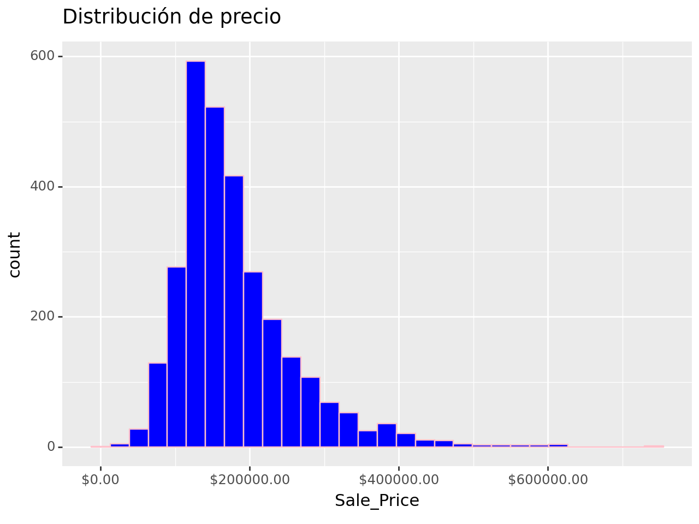
<Figure Size: (640 x 480)>El gráfico de caja muestra un número importante de datos atípicos por encima de un precio de $338,931.00:
(
ames >>
ggplot() +
geom_boxplot(aes(x = 0, y = "Sale_Price"), color= "blue", fill= "lightblue") +
scale_y_continuous(labels = dollar_format(prefix='$', digits=0, big_mark=',')) +
theme(axis_text_x=element_blank()) +
ggtitle("Distribución de Precio de Venta")
)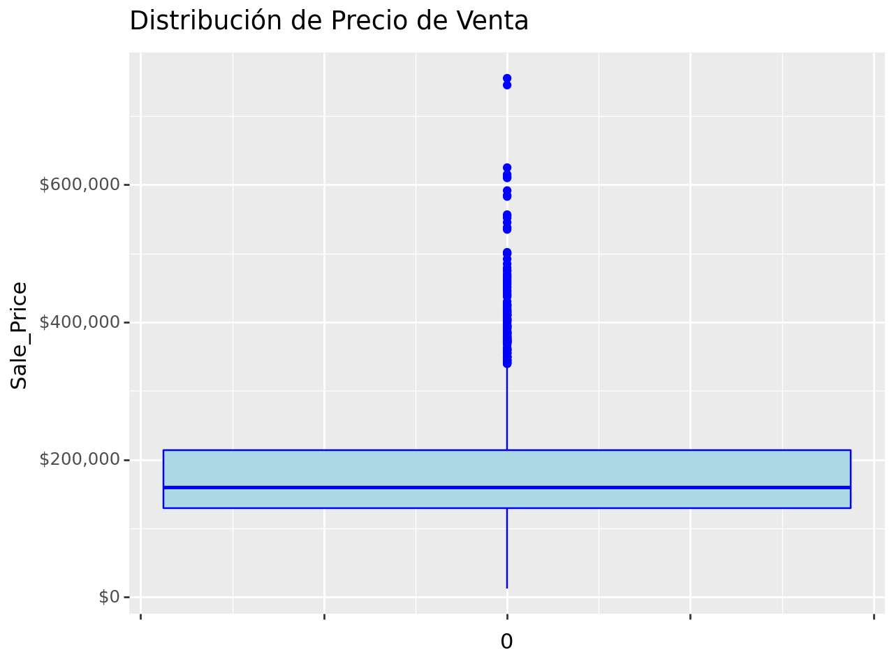
<Figure Size: (640 x 480)>4.3.1 Datos atípicos en la variable a predecir
Estableciendo como atípicos aquellos datos que están 1.5 veces el rango inter cuartílico (RIC) por encima del cuartil 3, tenemos lo siguiente:
(
ames >>
filter( (_.Sale_Price > 339500) ) >>
select (_.Overall_Cond, _.Lot_Area, _.Neighborhood, _.Heating_QC, _.Sale_Price)
)| Overall_Cond | Lot_Area | Neighborhood | Heating_QC | Sale_Price | |
|---|---|---|---|---|---|
| 15 | Average | 53504 | Stone_Brook | Excellent | 538000 |
| 17 | Poor | 11394 | Stone_Brook | Excellent | 394432 |
| 36 | Average | 12858 | Northridge_Heights | Excellent | 376162 |
| 38 | Average | 10159 | Northridge_Heights | Excellent | 395192 |
| 44 | Average | 12919 | Northridge_Heights | Excellent | 611657 |
| ... | ... | ... | ... | ... | ... |
| 2666 | Excellent | 22950 | Old_Town | Excellent | 475000 |
| 2737 | Very_Good | 19800 | Edwards | Good | 415000 |
| 2883 | Average | 5748 | Crawford | Excellent | 375000 |
| 2901 | Average | 11443 | Timberland | Excellent | 369900 |
| 2902 | Average | 11577 | Timberland | Excellent | 359900 |
137 rows × 5 columns
De esos 137 registros, el 93% cuentan con sistema de aire acondicionado excelente.
(
ames >>
filter((_.Heating_QC == "Excellent") & (_.Sale_Price >= 339500)) >> select (_.Overall_Cond, _.Lot_Area, _.Neighborhood, _.Heating_QC, _.Sale_Price)
)| Overall_Cond | Lot_Area | Neighborhood | Heating_QC | Sale_Price | |
|---|---|---|---|---|---|
| 15 | Average | 53504 | Stone_Brook | Excellent | 538000 |
| 17 | Poor | 11394 | Stone_Brook | Excellent | 394432 |
| 36 | Average | 12858 | Northridge_Heights | Excellent | 376162 |
| 38 | Average | 10159 | Northridge_Heights | Excellent | 395192 |
| 44 | Average | 12919 | Northridge_Heights | Excellent | 611657 |
| ... | ... | ... | ... | ... | ... |
| 2461 | Average | 13162 | Somerset | Excellent | 405749 |
| 2666 | Excellent | 22950 | Old_Town | Excellent | 475000 |
| 2883 | Average | 5748 | Crawford | Excellent | 375000 |
| 2901 | Average | 11443 | Timberland | Excellent | 369900 |
| 2902 | Average | 11577 | Timberland | Excellent | 359900 |
128 rows × 5 columns
Por último, el mayor número de propiedades con precios más altos se concentra en los barrios Northridge, Northrige Heights y Stone Brook, que, como se verá más adelante, son los barrios “más caros”.
(
ames >>
filter((_.Heating_QC == "Excellent") & (_.Sale_Price >= 339500)) >>
select(_.Neighborhood) >> arrange(_.Neighborhood) >> count(_.Neighborhood)
)| Neighborhood | n | |
|---|---|---|
| 0 | College_Creek | 5 |
| 1 | Crawford | 3 |
| 2 | Gilbert | 1 |
| 3 | Northridge | 21 |
| 4 | Northridge_Heights | 60 |
| 5 | Old_Town | 1 |
| 6 | Somerset | 8 |
| 7 | Stone_Brook | 22 |
| 8 | Timberland | 7 |
4.4 Variable Coordenadas geográficas
Es importante destacar que dentro de las variables numéricas, con formato float (enteros y decimales), se encuentran los campos Latitude y Longitude, los cuales hacen referencia a las coordenadas geográficas exactas de cada inmueble que se pueden consultar en Google Maps.
Si consultamos la casa más barata, y la más cara en toda la base, tenemos las imágenes siguientes, obtenidas con base en sus coordenadas geográficas:
(
ames >> select(_.MS_SubClass, _.Overall_Cond, _.Latitude, _.Longitude, _.Sale_Price) >> filter((_.Sale_Price == _.Sale_Price.min()) | (_.Sale_Price == _.Sale_Price.max()))
)| MS_SubClass | Overall_Cond | Latitude | Longitude | Sale_Price | |
|---|---|---|---|---|---|
| 181 | One_Story_1945_and_Older | Poor | 42.03 | -93.61 | 12789 |
| 1767 | Two_Story_1946_and_Newer | Above_Average | 42.05 | -93.66 | 755000 |


Da click en las imágenes para dirigirte al inmueble correspondiente en Google Maps.
4.5 Análisis de correlaciones de variables numéricas
Se obtienen todas las correlaciones de todas las variables numéricas.
# Seleccionar solo las columnas numéricas
numeric_columns = ames.select_dtypes(include=[np.number])
# Calcular la matriz de correlación
correlation_matrix = numeric_columns.corr()
# Puedes imprimir la matriz de correlación completa
print(correlation_matrix) Lot_Frontage Lot_Area Year_Built Year_Remod_Add \
Lot_Frontage 1.00 0.14 0.03 0.07
Lot_Area 0.14 1.00 0.02 0.02
Year_Built 0.03 0.02 1.00 0.61
Year_Remod_Add 0.07 0.02 0.61 1.00
Mas_Vnr_Area 0.11 0.13 0.31 0.19
BsmtFin_SF_1 0.07 -0.05 -0.18 -0.05
BsmtFin_SF_2 -0.01 0.08 -0.03 -0.06
Bsmt_Unf_SF 0.14 0.02 0.13 0.17
Total_Bsmt_SF 0.21 0.25 0.41 0.30
First_Flr_SF 0.24 0.33 0.31 0.24
Second_Flr_SF -0.00 0.03 0.02 0.16
Gr_Liv_Area 0.19 0.29 0.24 0.32
Bsmt_Full_Bath 0.02 0.12 0.21 0.13
Bsmt_Half_Bath -0.03 0.03 -0.03 -0.05
Full_Bath 0.08 0.13 0.47 0.46
Half_Bath -0.03 0.04 0.27 0.21
Bedroom_AbvGr 0.11 0.14 -0.06 -0.02
Kitchen_AbvGr 0.02 -0.02 -0.14 -0.14
TotRms_AbvGrd 0.20 0.22 0.11 0.20
Fireplaces 0.05 0.26 0.17 0.13
Garage_Cars 0.14 0.18 0.54 0.42
Garage_Area 0.19 0.21 0.48 0.38
Wood_Deck_SF 0.00 0.16 0.23 0.22
Open_Porch_SF 0.09 0.10 0.20 0.24
Enclosed_Porch 0.02 0.02 -0.37 -0.22
Three_season_porch 0.00 0.02 0.02 0.04
Screen_Porch 0.05 0.06 -0.04 -0.05
Pool_Area 0.11 0.09 0.00 -0.01
Misc_Val 0.00 0.07 -0.01 -0.00
Mo_Sold 0.02 0.00 0.01 0.02
Year_Sold -0.01 -0.02 -0.01 0.03
Sale_Price 0.20 0.27 0.56 0.53
Longitude -0.02 -0.10 -0.43 -0.32
Latitude 0.05 -0.04 0.25 0.18
Mas_Vnr_Area BsmtFin_SF_1 BsmtFin_SF_2 Bsmt_Unf_SF \
Lot_Frontage 0.11 0.07 -0.01 0.14
Lot_Area 0.13 -0.05 0.08 0.02
Year_Built 0.31 -0.18 -0.03 0.13
Year_Remod_Add 0.19 -0.05 -0.06 0.17
Mas_Vnr_Area 1.00 -0.11 -0.01 0.09
BsmtFin_SF_1 -0.11 1.00 -0.12 0.49
BsmtFin_SF_2 -0.01 -0.12 1.00 -0.24
Bsmt_Unf_SF 0.09 0.49 -0.24 1.00
Total_Bsmt_SF 0.39 -0.16 0.09 0.41
First_Flr_SF 0.39 -0.12 0.08 0.30
Second_Flr_SF 0.12 0.16 -0.10 0.00
Gr_Liv_Area 0.40 0.05 -0.02 0.24
Bsmt_Full_Bath 0.14 -0.47 0.16 -0.40
Bsmt_Half_Bath 0.02 -0.11 0.10 -0.11
Full_Bath 0.25 0.05 -0.08 0.27
Half_Bath 0.19 0.03 -0.03 -0.03
Bedroom_AbvGr 0.08 0.11 -0.03 0.19
Kitchen_AbvGr -0.05 0.10 -0.04 0.07
TotRms_AbvGrd 0.28 0.11 -0.05 0.25
Fireplaces 0.27 -0.14 0.07 0.00
Garage_Cars 0.36 -0.08 -0.01 0.18
Garage_Area 0.37 -0.10 0.00 0.16
Wood_Deck_SF 0.17 -0.15 0.10 -0.04
Open_Porch_SF 0.14 -0.00 -0.01 0.12
Enclosed_Porch -0.11 0.10 0.03 0.01
Three_season_porch 0.01 -0.05 -0.02 -0.01
Screen_Porch 0.07 -0.04 0.06 -0.05
Pool_Area 0.00 -0.03 0.04 -0.03
Misc_Val 0.05 -0.04 -0.01 -0.01
Mo_Sold -0.00 0.02 -0.01 0.02
Year_Sold -0.02 -0.04 0.01 -0.04
Sale_Price 0.50 -0.13 0.01 0.18
Longitude -0.08 0.06 -0.03 -0.05
Latitude 0.22 0.01 -0.02 0.16
Total_Bsmt_SF First_Flr_SF Second_Flr_SF Gr_Liv_Area \
Lot_Frontage 0.21 0.24 -0.00 0.19
Lot_Area 0.25 0.33 0.03 0.29
Year_Built 0.41 0.31 0.02 0.24
Year_Remod_Add 0.30 0.24 0.16 0.32
Mas_Vnr_Area 0.39 0.39 0.12 0.40
BsmtFin_SF_1 -0.16 -0.12 0.16 0.05
BsmtFin_SF_2 0.09 0.08 -0.10 -0.02
Bsmt_Unf_SF 0.41 0.30 0.00 0.24
Total_Bsmt_SF 1.00 0.80 -0.20 0.45
First_Flr_SF 0.80 1.00 -0.25 0.56
Second_Flr_SF -0.20 -0.25 1.00 0.66
Gr_Liv_Area 0.45 0.56 0.66 1.00
Bsmt_Full_Bath 0.33 0.26 -0.16 0.06
Bsmt_Half_Bath 0.01 0.01 -0.06 -0.04
Full_Bath 0.33 0.37 0.40 0.63
Half_Bath -0.05 -0.10 0.61 0.43
Bedroom_AbvGr 0.05 0.11 0.50 0.52
Kitchen_AbvGr -0.04 0.08 0.07 0.12
TotRms_AbvGrd 0.28 0.39 0.59 0.81
Fireplaces 0.33 0.41 0.17 0.45
Garage_Cars 0.44 0.44 0.18 0.49
Garage_Area 0.49 0.49 0.13 0.48
Wood_Deck_SF 0.23 0.23 0.09 0.25
Open_Porch_SF 0.25 0.24 0.18 0.34
Enclosed_Porch -0.08 -0.07 0.06 0.00
Three_season_porch 0.04 0.04 -0.03 0.01
Screen_Porch 0.08 0.10 0.01 0.09
Pool_Area 0.07 0.12 0.04 0.14
Misc_Val 0.08 0.09 -0.01 0.07
Mo_Sold 0.02 0.04 0.01 0.04
Year_Sold -0.01 -0.01 -0.02 -0.03
Sale_Price 0.63 0.62 0.27 0.71
Longitude -0.16 -0.14 -0.05 -0.14
Latitude 0.18 0.13 0.10 0.18
Bsmt_Full_Bath Bsmt_Half_Bath Full_Bath Half_Bath \
Lot_Frontage 0.02 -0.03 0.08 -0.03
Lot_Area 0.12 0.03 0.13 0.04
Year_Built 0.21 -0.03 0.47 0.27
Year_Remod_Add 0.13 -0.05 0.46 0.21
Mas_Vnr_Area 0.14 0.02 0.25 0.19
BsmtFin_SF_1 -0.47 -0.11 0.05 0.03
BsmtFin_SF_2 0.16 0.10 -0.08 -0.03
Bsmt_Unf_SF -0.40 -0.11 0.27 -0.03
Total_Bsmt_SF 0.33 0.01 0.33 -0.05
First_Flr_SF 0.26 0.01 0.37 -0.10
Second_Flr_SF -0.16 -0.06 0.40 0.61
Gr_Liv_Area 0.06 -0.04 0.63 0.43
Bsmt_Full_Bath 1.00 -0.15 -0.02 -0.04
Bsmt_Half_Bath -0.15 1.00 -0.05 -0.06
Full_Bath -0.02 -0.05 1.00 0.16
Half_Bath -0.04 -0.06 0.16 1.00
Bedroom_AbvGr -0.16 0.02 0.36 0.25
Kitchen_AbvGr -0.02 -0.06 0.17 -0.04
TotRms_AbvGrd -0.04 -0.05 0.53 0.35
Fireplaces 0.17 0.04 0.23 0.20
Garage_Cars 0.16 -0.03 0.48 0.23
Garage_Area 0.18 -0.02 0.41 0.18
Wood_Deck_SF 0.19 0.05 0.18 0.12
Open_Porch_SF 0.08 -0.04 0.26 0.18
Enclosed_Porch -0.07 -0.01 -0.12 -0.08
Three_season_porch 0.03 0.03 0.02 -0.02
Screen_Porch 0.05 0.04 -0.02 0.04
Pool_Area 0.04 0.07 0.03 0.00
Misc_Val -0.00 0.04 -0.01 0.03
Mo_Sold -0.00 0.02 0.05 -0.00
Year_Sold 0.04 -0.02 -0.00 0.00
Sale_Price 0.28 -0.04 0.55 0.29
Longitude -0.11 0.05 -0.23 -0.12
Latitude -0.02 -0.04 0.21 0.17
Bedroom_AbvGr Kitchen_AbvGr TotRms_AbvGrd Fireplaces \
Lot_Frontage 0.11 0.02 0.20 0.05
Lot_Area 0.14 -0.02 0.22 0.26
Year_Built -0.06 -0.14 0.11 0.17
Year_Remod_Add -0.02 -0.14 0.20 0.13
Mas_Vnr_Area 0.08 -0.05 0.28 0.27
BsmtFin_SF_1 0.11 0.10 0.11 -0.14
BsmtFin_SF_2 -0.03 -0.04 -0.05 0.07
Bsmt_Unf_SF 0.19 0.07 0.25 0.00
Total_Bsmt_SF 0.05 -0.04 0.28 0.33
First_Flr_SF 0.11 0.08 0.39 0.41
Second_Flr_SF 0.50 0.07 0.59 0.17
Gr_Liv_Area 0.52 0.12 0.81 0.45
Bsmt_Full_Bath -0.16 -0.02 -0.04 0.17
Bsmt_Half_Bath 0.02 -0.06 -0.05 0.04
Full_Bath 0.36 0.17 0.53 0.23
Half_Bath 0.25 -0.04 0.35 0.20
Bedroom_AbvGr 1.00 0.24 0.67 0.08
Kitchen_AbvGr 0.24 1.00 0.29 -0.11
TotRms_AbvGrd 0.67 0.29 1.00 0.30
Fireplaces 0.08 -0.11 0.30 1.00
Garage_Cars 0.09 -0.04 0.36 0.32
Garage_Area 0.07 -0.06 0.33 0.29
Wood_Deck_SF 0.03 -0.09 0.15 0.23
Open_Porch_SF 0.08 -0.07 0.24 0.16
Enclosed_Porch 0.05 0.03 0.02 -0.00
Three_season_porch -0.05 -0.02 -0.03 0.02
Screen_Porch 0.01 -0.06 0.03 0.17
Pool_Area 0.04 -0.01 0.07 0.10
Misc_Val 0.00 0.03 0.06 0.01
Mo_Sold 0.05 0.04 0.04 0.03
Year_Sold -0.02 0.04 -0.03 -0.01
Sale_Price 0.14 -0.12 0.50 0.47
Longitude -0.04 0.07 -0.09 -0.06
Latitude 0.02 -0.07 0.15 0.15
Garage_Cars Garage_Area Wood_Deck_SF Open_Porch_SF \
Lot_Frontage 0.14 0.19 0.00 0.09
Lot_Area 0.18 0.21 0.16 0.10
Year_Built 0.54 0.48 0.23 0.20
Year_Remod_Add 0.42 0.38 0.22 0.24
Mas_Vnr_Area 0.36 0.37 0.17 0.14
BsmtFin_SF_1 -0.08 -0.10 -0.15 -0.00
BsmtFin_SF_2 -0.01 0.00 0.10 -0.01
Bsmt_Unf_SF 0.18 0.16 -0.04 0.12
Total_Bsmt_SF 0.44 0.49 0.23 0.25
First_Flr_SF 0.44 0.49 0.23 0.24
Second_Flr_SF 0.18 0.13 0.09 0.18
Gr_Liv_Area 0.49 0.48 0.25 0.34
Bsmt_Full_Bath 0.16 0.18 0.19 0.08
Bsmt_Half_Bath -0.03 -0.02 0.05 -0.04
Full_Bath 0.48 0.41 0.18 0.26
Half_Bath 0.23 0.18 0.12 0.18
Bedroom_AbvGr 0.09 0.07 0.03 0.08
Kitchen_AbvGr -0.04 -0.06 -0.09 -0.07
TotRms_AbvGrd 0.36 0.33 0.15 0.24
Fireplaces 0.32 0.29 0.23 0.16
Garage_Cars 1.00 0.89 0.24 0.20
Garage_Area 0.89 1.00 0.24 0.23
Wood_Deck_SF 0.24 0.24 1.00 0.04
Open_Porch_SF 0.20 0.23 0.04 1.00
Enclosed_Porch -0.13 -0.11 -0.12 -0.06
Three_season_porch 0.02 0.03 -0.00 -0.01
Screen_Porch 0.04 0.06 -0.05 0.05
Pool_Area 0.03 0.05 0.09 0.06
Misc_Val -0.02 0.01 0.06 0.08
Mo_Sold 0.05 0.04 0.02 0.03
Year_Sold -0.02 -0.01 0.00 -0.04
Sale_Price 0.65 0.64 0.33 0.31
Longitude -0.22 -0.21 -0.14 -0.10
Latitude 0.26 0.21 0.03 0.09
Enclosed_Porch Three_season_porch Screen_Porch \
Lot_Frontage 0.02 0.00 0.05
Lot_Area 0.02 0.02 0.06
Year_Built -0.37 0.02 -0.04
Year_Remod_Add -0.22 0.04 -0.05
Mas_Vnr_Area -0.11 0.01 0.07
BsmtFin_SF_1 0.10 -0.05 -0.04
BsmtFin_SF_2 0.03 -0.02 0.06
Bsmt_Unf_SF 0.01 -0.01 -0.05
Total_Bsmt_SF -0.08 0.04 0.08
First_Flr_SF -0.07 0.04 0.10
Second_Flr_SF 0.06 -0.03 0.01
Gr_Liv_Area 0.00 0.01 0.09
Bsmt_Full_Bath -0.07 0.03 0.05
Bsmt_Half_Bath -0.01 0.03 0.04
Full_Bath -0.12 0.02 -0.02
Half_Bath -0.08 -0.02 0.04
Bedroom_AbvGr 0.05 -0.05 0.01
Kitchen_AbvGr 0.03 -0.02 -0.06
TotRms_AbvGrd 0.02 -0.03 0.03
Fireplaces -0.00 0.02 0.17
Garage_Cars -0.13 0.02 0.04
Garage_Area -0.11 0.03 0.06
Wood_Deck_SF -0.12 -0.00 -0.05
Open_Porch_SF -0.06 -0.01 0.05
Enclosed_Porch 1.00 -0.03 -0.06
Three_season_porch -0.03 1.00 -0.03
Screen_Porch -0.06 -0.03 1.00
Pool_Area 0.09 -0.01 0.03
Misc_Val 0.01 -0.00 0.01
Mo_Sold -0.02 0.03 0.03
Year_Sold -0.00 0.02 -0.01
Sale_Price -0.13 0.03 0.11
Longitude 0.14 0.02 0.05
Latitude -0.10 0.00 0.02
Pool_Area Misc_Val Mo_Sold Year_Sold Sale_Price \
Lot_Frontage 0.11 0.00 0.02 -0.01 0.20
Lot_Area 0.09 0.07 0.00 -0.02 0.27
Year_Built 0.00 -0.01 0.01 -0.01 0.56
Year_Remod_Add -0.01 -0.00 0.02 0.03 0.53
Mas_Vnr_Area 0.00 0.05 -0.00 -0.02 0.50
BsmtFin_SF_1 -0.03 -0.04 0.02 -0.04 -0.13
BsmtFin_SF_2 0.04 -0.01 -0.01 0.01 0.01
Bsmt_Unf_SF -0.03 -0.01 0.02 -0.04 0.18
Total_Bsmt_SF 0.07 0.08 0.02 -0.01 0.63
First_Flr_SF 0.12 0.09 0.04 -0.01 0.62
Second_Flr_SF 0.04 -0.01 0.01 -0.02 0.27
Gr_Liv_Area 0.14 0.07 0.04 -0.03 0.71
Bsmt_Full_Bath 0.04 -0.00 -0.00 0.04 0.28
Bsmt_Half_Bath 0.07 0.04 0.02 -0.02 -0.04
Full_Bath 0.03 -0.01 0.05 -0.00 0.55
Half_Bath 0.00 0.03 -0.00 0.00 0.29
Bedroom_AbvGr 0.04 0.00 0.05 -0.02 0.14
Kitchen_AbvGr -0.01 0.03 0.04 0.04 -0.12
TotRms_AbvGrd 0.07 0.06 0.04 -0.03 0.50
Fireplaces 0.10 0.01 0.03 -0.01 0.47
Garage_Cars 0.03 -0.02 0.05 -0.02 0.65
Garage_Area 0.05 0.01 0.04 -0.01 0.64
Wood_Deck_SF 0.09 0.06 0.02 0.00 0.33
Open_Porch_SF 0.06 0.08 0.03 -0.04 0.31
Enclosed_Porch 0.09 0.01 -0.02 -0.00 -0.13
Three_season_porch -0.01 -0.00 0.03 0.02 0.03
Screen_Porch 0.03 0.01 0.03 -0.01 0.11
Pool_Area 1.00 0.01 -0.04 -0.05 0.07
Misc_Val 0.01 1.00 0.01 0.01 -0.02
Mo_Sold -0.04 0.01 1.00 -0.16 0.04
Year_Sold -0.05 0.01 -0.16 1.00 -0.03
Sale_Price 0.07 -0.02 0.04 -0.03 1.00
Longitude -0.00 0.01 0.04 0.00 -0.25
Latitude -0.01 -0.01 0.04 -0.01 0.29
Longitude Latitude
Lot_Frontage -0.02 0.05
Lot_Area -0.10 -0.04
Year_Built -0.43 0.25
Year_Remod_Add -0.32 0.18
Mas_Vnr_Area -0.08 0.22
BsmtFin_SF_1 0.06 0.01
BsmtFin_SF_2 -0.03 -0.02
Bsmt_Unf_SF -0.05 0.16
Total_Bsmt_SF -0.16 0.18
First_Flr_SF -0.14 0.13
Second_Flr_SF -0.05 0.10
Gr_Liv_Area -0.14 0.18
Bsmt_Full_Bath -0.11 -0.02
Bsmt_Half_Bath 0.05 -0.04
Full_Bath -0.23 0.21
Half_Bath -0.12 0.17
Bedroom_AbvGr -0.04 0.02
Kitchen_AbvGr 0.07 -0.07
TotRms_AbvGrd -0.09 0.15
Fireplaces -0.06 0.15
Garage_Cars -0.22 0.26
Garage_Area -0.21 0.21
Wood_Deck_SF -0.14 0.03
Open_Porch_SF -0.10 0.09
Enclosed_Porch 0.14 -0.10
Three_season_porch 0.02 0.00
Screen_Porch 0.05 0.02
Pool_Area -0.00 -0.01
Misc_Val 0.01 -0.01
Mo_Sold 0.04 0.04
Year_Sold 0.00 -0.01
Sale_Price -0.25 0.29
Longitude 1.00 0.03
Latitude 0.03 1.00 Revisado lo anterior, se consideran relevantes las correlaciones mayores o iguales a 0.5
numeric_columns = ames.select_dtypes(include=[np.number])
# Calcular las correlaciones entre todas las variables numéricas
correlation_matrix = numeric_columns.corr()
# Iterar a través de las correlaciones y mostrar las que son mayores o iguales a 0.5
for column1 in correlation_matrix.columns:
for column2 in correlation_matrix.columns:
correlation = correlation_matrix.loc[column1, column2]
if column1 != column2 and abs(correlation) >= 0.5:
print(f"Correlación entre {column1} y {column2}: {correlation}")Correlación entre Year_Built y Year_Remod_Add: 0.6120952503946816
Correlación entre Year_Built y Garage_Cars: 0.5379817054609293
Correlación entre Year_Built y Sale_Price: 0.5584261057120437
Correlación entre Year_Remod_Add y Year_Built: 0.6120952503946816
Correlación entre Year_Remod_Add y Sale_Price: 0.532973754026694
Correlación entre Mas_Vnr_Area y Sale_Price: 0.5021959770445465
Correlación entre Total_Bsmt_SF y First_Flr_SF: 0.8004286876684684
Correlación entre Total_Bsmt_SF y Sale_Price: 0.6325288490320315
Correlación entre First_Flr_SF y Total_Bsmt_SF: 0.8004286876684684
Correlación entre First_Flr_SF y Gr_Liv_Area: 0.562165842932009
Correlación entre First_Flr_SF y Sale_Price: 0.6216760632702522
Correlación entre Second_Flr_SF y Gr_Liv_Area: 0.6552511798220086
Correlación entre Second_Flr_SF y Half_Bath: 0.6116336701499726
Correlación entre Second_Flr_SF y Bedroom_AbvGr: 0.5046505900002038
Correlación entre Second_Flr_SF y TotRms_AbvGrd: 0.5852136527493758
Correlación entre Gr_Liv_Area y First_Flr_SF: 0.562165842932009
Correlación entre Gr_Liv_Area y Second_Flr_SF: 0.6552511798220086
Correlación entre Gr_Liv_Area y Full_Bath: 0.6303208098774116
Correlación entre Gr_Liv_Area y Bedroom_AbvGr: 0.5168075108650242
Correlación entre Gr_Liv_Area y TotRms_AbvGrd: 0.8077721448904711
Correlación entre Gr_Liv_Area y Sale_Price: 0.7067799209766268
Correlación entre Full_Bath y Gr_Liv_Area: 0.6303208098774116
Correlación entre Full_Bath y TotRms_AbvGrd: 0.5285991741538512
Correlación entre Full_Bath y Sale_Price: 0.5456039005201108
Correlación entre Half_Bath y Second_Flr_SF: 0.6116336701499726
Correlación entre Bedroom_AbvGr y Second_Flr_SF: 0.5046505900002038
Correlación entre Bedroom_AbvGr y Gr_Liv_Area: 0.5168075108650242
Correlación entre Bedroom_AbvGr y TotRms_AbvGrd: 0.6726471644586508
Correlación entre TotRms_AbvGrd y Second_Flr_SF: 0.5852136527493758
Correlación entre TotRms_AbvGrd y Gr_Liv_Area: 0.8077721448904711
Correlación entre TotRms_AbvGrd y Full_Bath: 0.5285991741538512
Correlación entre TotRms_AbvGrd y Bedroom_AbvGr: 0.6726471644586508
Correlación entre Garage_Cars y Year_Built: 0.5379817054609293
Correlación entre Garage_Cars y Garage_Area: 0.8898659902448479
Correlación entre Garage_Cars y Sale_Price: 0.6475616131207715
Correlación entre Garage_Area y Garage_Cars: 0.8898659902448479
Correlación entre Garage_Area y Sale_Price: 0.6401382984873729
Correlación entre Sale_Price y Year_Built: 0.5584261057120437
Correlación entre Sale_Price y Year_Remod_Add: 0.532973754026694
Correlación entre Sale_Price y Mas_Vnr_Area: 0.5021959770445465
Correlación entre Sale_Price y Total_Bsmt_SF: 0.6325288490320315
Correlación entre Sale_Price y First_Flr_SF: 0.6216760632702522
Correlación entre Sale_Price y Gr_Liv_Area: 0.7067799209766268
Correlación entre Sale_Price y Full_Bath: 0.5456039005201108
Correlación entre Sale_Price y Garage_Cars: 0.6475616131207715
Correlación entre Sale_Price y Garage_Area: 0.6401382984873729Del resultado anterior, 9 variables tienen una correlación mayor o igual a 0.5 con respecto al precio de ventas:
Gr_Liv_Area: 0.707
Garage_Cars: 0.648
Garage_Area: 0.640
Total_Bsmt_SF: 0.633
First_Flr_SF: 0.622
Year_Built: 0.558
Full_Bath: 0.546
Year_Remod_Add: 0.533
Mas_Vnr_Area: 0.502
Dada la similitud entre las variables Garage_Cars y Garace_Area, se considera sólo a la primera, que tiene un poco más de correlación.
Area (Lot_Area)
(
ames >> select(_.MS_SubClass, _.Overall_Cond, _.Lot_Area, _.Sale_Price) >> filter((_.Lot_Area == _.Lot_Area.min()) | (_.Lot_Area == _.Lot_Area.max()))
)| MS_SubClass | Overall_Cond | Lot_Area | Sale_Price | |
|---|---|---|---|---|
| 935 | Two_Story_PUD_1946_and_Newer | Above_Average | 1300 | 124000 |
| 956 | One_Story_1946_and_Newer_All_Styles | Average | 215245 | 375000 |
Los inmuebles en Ames, Iowa, van desde los 1,300 pies cuadrados (396 mts. cuadrados) hasta los 215,245 pies cuadrados (65,607 mts. cuadrados).
correlation = ames['Sale_Price'].corr(ames['Lot_Area'])
print(f'La correlación entre el tamaño de los lotes o área de las casas de Ames y su precio de venta es {correlation.round(2)}')
correlation.round(2)La correlación entre el tamaño de los lotes o área de las casas de Ames y su precio de venta es 0.270.27Lo anterior es indicativo de que hay una correlación débil que muestra que no es una variable que influye en el precio de venta.
(
ames >>
ggplot(aes(x = "Lot_Area", y = "Sale_Price")) +
geom_point()
)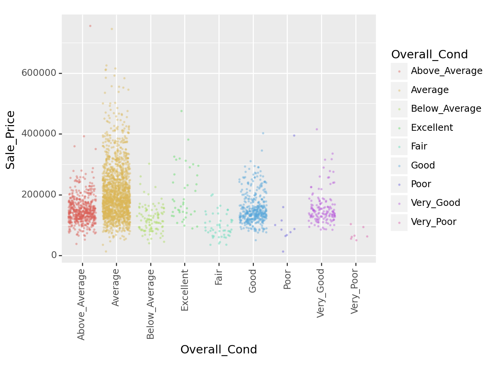
<Figure Size: (640 x 480)>Año de construcción / remodelación (Year_Built, Year_Remod_Add)
correlation = ames['Sale_Price'].corr(ames['Year_Remod_Add'])
print(f'La correlación entre el año de construcción / remodelación y su precio de venta es {correlation.round(2)}')
correlation.round(2)La correlación entre el año de construcción / remodelación y su precio de venta es 0.530.53De modo que se considera que hay una correlación moderada que indica que sí es una variable que influye en el precio de venta.
(
ames >>
ggplot(aes(x = "Year_Remod_Add", y = "Sale_Price")) +
geom_point()
)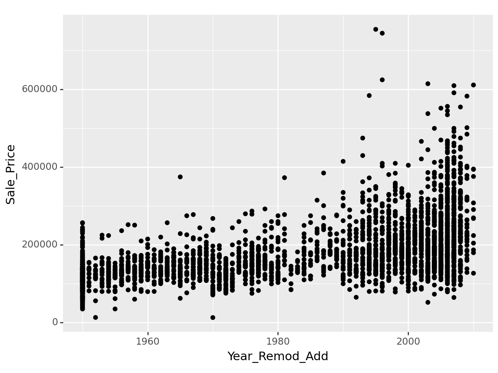
<Figure Size: (640 x 480)>Baños completos (Full_Bath)
correlation = ames['Sale_Price'].corr(ames['Full_Bath'])
print(f'La correlación entre el número de baños completos en las casas de Ames y su precio de venta es {correlation.round(2)}')
correlation.round(2)La correlación entre el número de baños completos en las casas de Ames y su precio de venta es 0.550.55Se considera que hay una correlación moderada que indica que sí es una variable que influye en el precio de venta.
(
ames >>
ggplot(aes(y = "Sale_Price", x = "Full_Bath", color = "Full_Bath")) +
geom_jitter(size = 0.3, alpha = 0.3) + theme(axis_text_x=element_text(angle=90))
)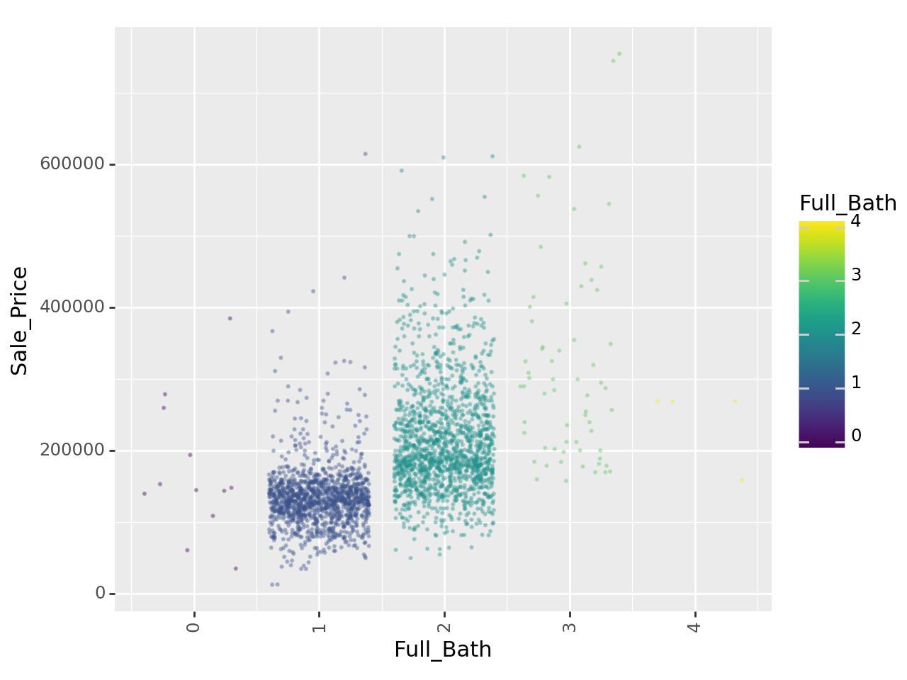
<Figure Size: (640 x 480)>Lugares de estacionamiento (Garage_Cars)
correlation = ames['Sale_Price'].corr(ames['Garage_Cars'])
print(f'La correlación entre el número de carros que caben en el garage de las casas de Ames y su precio de venta es {correlation.round(2)}')
correlation.round(2)La correlación entre el número de carros que caben en el garage de las casas de Ames y su precio de venta es 0.650.65Por consiguiente se considera que hay una correlación moderada que indica que sí es una variable que influye en el precio de venta.
(
ames >>
ggplot(aes(y = "Sale_Price", x = "Garage_Cars", color = "Garage_Cars")) +
geom_jitter(size = 0.3, alpha = 0.3) + theme(axis_text_x=element_text(angle=90))
)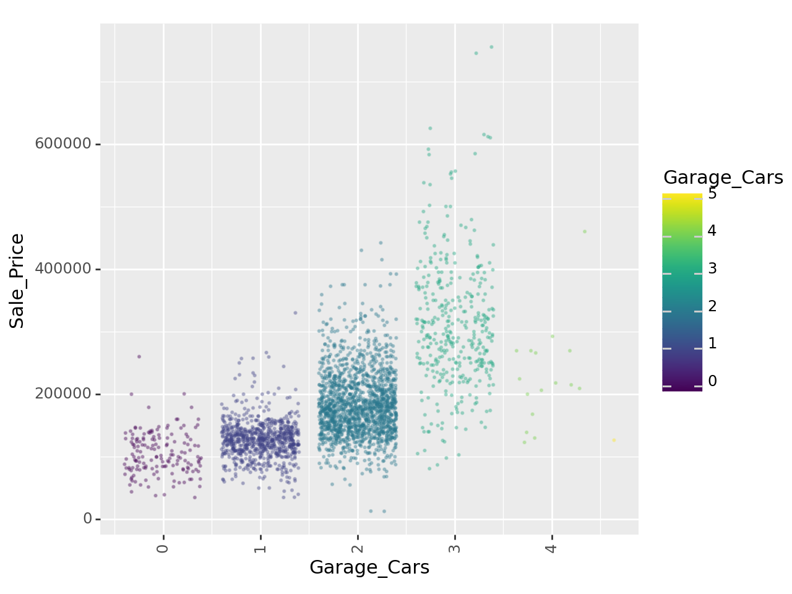
<Figure Size: (640 x 480)>4.6 Variables categóricas
Las variables categóricas que se considera muestran relación con la variable a predecir Sale_Price son las siguientes:
Barrio (Neighborhood).
Estado general (Overall_Cond).
Tipo de casa (House_Style).
Aire acondicionado (Heating_QC).
Barrio (Neighborhood)
Existen 28 barrios; la mayoría de las casas se concentran en North Ames, College Creek, Old Town y Edwards (39%):
# Variables categóricas
ames['Neighborhood'].value_counts()Neighborhood
North_Ames 443
College_Creek 267
Old_Town 239
Edwards 194
Somerset 182
Northridge_Heights 166
Gilbert 165
Sawyer 151
Northwest_Ames 131
Sawyer_West 125
Mitchell 114
Brookside 108
Crawford 103
Iowa_DOT_and_Rail_Road 93
Timberland 72
Northridge 71
Stone_Brook 51
South_and_West_of_Iowa_State_University 48
Clear_Creek 44
Meadow_Village 37
Briardale 30
Bloomington_Heights 28
Veenker 24
Northpark_Villa 23
Blueste 10
Greens 8
Green_Hills 2
Landmark 1
Name: count, dtype: int64Los precios promedio por barrio nos indican que Northridge, Stone Brook y Northridge Heights son barrios cuyo promedio casi duplica el promedio general de las casas en Ames.
# Precio de venta promedio por barrio
(
ames >>
group_by(_.Neighborhood) >>
summarize(Mean_Sale_Price = _.Sale_Price.mean().round(0) ) >>
arrange(-_.Mean_Sale_Price)
)| Neighborhood | Mean_Sale_Price | |
|---|---|---|
| 17 | Northridge | 330319.00 |
| 25 | Stone_Brook | 324229.00 |
| 18 | Northridge_Heights | 322018.00 |
| 9 | Green_Hills | 280000.00 |
| 27 | Veenker | 248315.00 |
| 26 | Timberland | 246600.00 |
| 23 | Somerset | 229707.00 |
| 4 | Clear_Creek | 208662.00 |
| 6 | Crawford | 207551.00 |
| 5 | College_Creek | 201803.00 |
| 0 | Bloomington_Heights | 196662.00 |
| 10 | Greens | 193531.00 |
| 8 | Gilbert | 190647.00 |
| 19 | Northwest_Ames | 188407.00 |
| 22 | Sawyer_West | 184070.00 |
| 14 | Mitchell | 162227.00 |
| 15 | North_Ames | 145097.00 |
| 1 | Blueste | 143590.00 |
| 16 | Northpark_Villa | 140711.00 |
| 12 | Landmark | 137000.00 |
| 21 | Sawyer | 136751.00 |
| 24 | South_and_West_of_Iowa_State_University | 135072.00 |
| 7 | Edwards | 130843.00 |
| 3 | Brookside | 124756.00 |
| 20 | Old_Town | 123992.00 |
| 2 | Briardale | 105608.00 |
| 11 | Iowa_DOT_and_Rail_Road | 103753.00 |
| 13 | Meadow_Village | 95756.00 |
Estado general (Overall_Cond)
Tabla de precios de venta por Estado general del inmueble, comparando las métricas básicas, en particular la relación media a mediana (sesgo).
(
ames >>
group_by(_.Overall_Cond) >>
summarize(Q1 = _.Sale_Price.quantile(q = .25), MEDIA = _.Sale_Price.mean().round(1), MEDIANA = _.Sale_Price.median().round(1), Q3 = _.Sale_Price.quantile(q = .75), STDEV = _.Sale_Price.std().round(1)) >>
mutate(SESGO = if_else(_.MEDIA > _.MEDIANA, "DERECHA", "IZQUIERDA"))
)| Overall_Cond | Q1 | MEDIA | MEDIANA | Q3 | STDEV | SESGO | |
|---|---|---|---|---|---|---|---|
| 0 | Above_Average | 123000.00 | 150377.90 | 142500.00 | 170000.00 | 50557.80 | DERECHA |
| 1 | Average | 145025.00 | 206027.00 | 187000.00 | 245262.50 | 87026.50 | DERECHA |
| 2 | Below_Average | 88000.00 | 120923.90 | 115000.00 | 146000.00 | 44730.40 | DERECHA |
| 3 | Excellent | 140000.00 | 199765.90 | 168000.00 | 263400.00 | 88072.40 | DERECHA |
| 4 | Fair | 67250.00 | 95994.00 | 84500.00 | 115050.00 | 38804.50 | DERECHA |
| 5 | Good | 122925.00 | 153002.00 | 139700.00 | 168500.00 | 49042.60 | DERECHA |
| 6 | Poor | 69375.00 | 116062.10 | 86000.00 | 111250.00 | 104754.00 | DERECHA |
| 7 | Very_Good | 126793.75 | 154775.50 | 141750.00 | 167125.00 | 51784.60 | DERECHA |
| 8 | Very_Poor | 58000.00 | 69981.30 | 62500.00 | 79184.50 | 20092.90 | DERECHA |
Hay inidicios de que el precio tiene relación directa con la condición general del inmueble.
(
ames >>
ggplot( aes( x = "Overall_Cond")) +
geom_bar( color= "darkblue", fill= "cyan", alpha= 0.7) +
scale_y_continuous(labels = comma_format()) +
ggtitle("Distribución de Condición General") +
theme_dark() +
theme(axis_text_x=element_text(angle=90))
)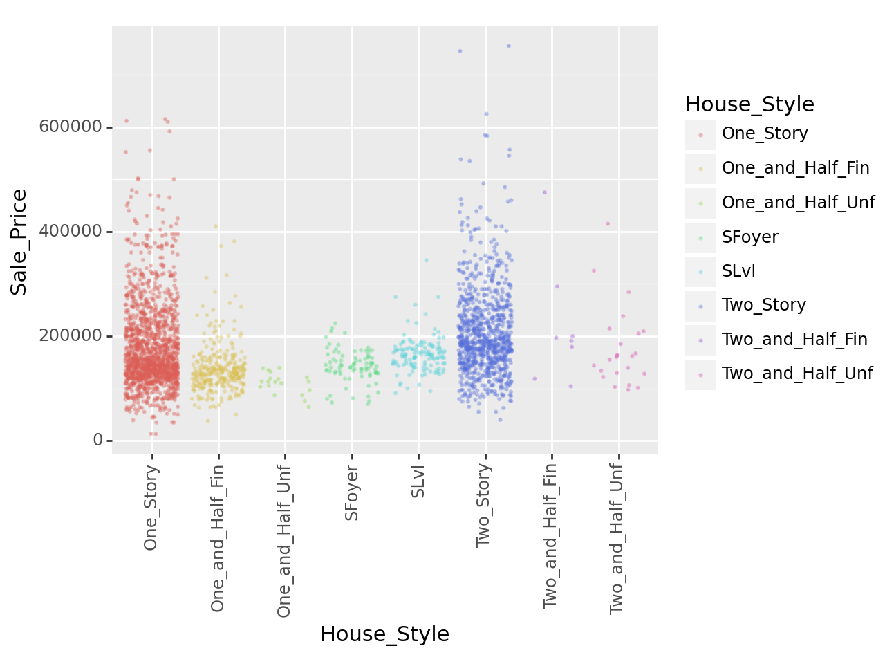
<Figure Size: (640 x 480)>(
ames >>
ggplot(aes(y = "Sale_Price", x = "Overall_Cond", color = "Overall_Cond")) +
geom_jitter(size = 0.3, alpha = 0.3) + theme(axis_text_x=element_text(angle=90))
)<Figure Size: (640 x 480)>(
ames >>
ggplot(aes(y = "Sale_Price", x = "Overall_Cond", color = "Overall_Cond")) +
geom_boxplot(size=1, alpha= 0.3) + theme(axis_text_x=element_text(angle=90))
)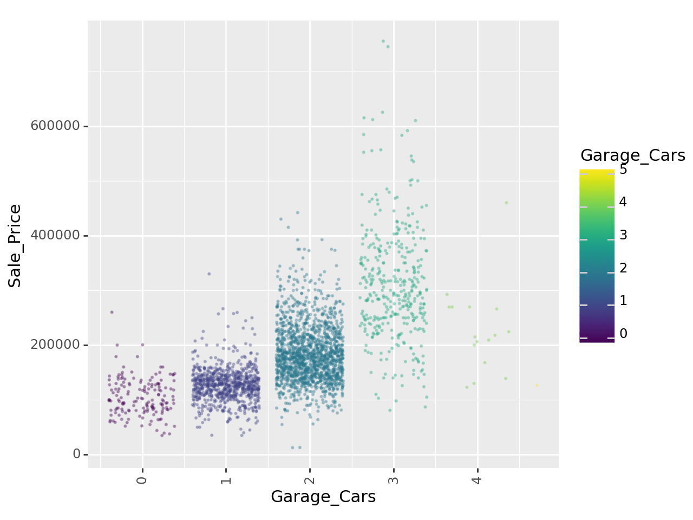
<Figure Size: (640 x 480)>(
ggplot(ames, aes(x = "Sale_Price", y = "Year_Remod_Add", color = "Overall_Cond")) +
geom_point() + geom_smooth(method = "lm") +
facet_wrap("Overall_Cond") + theme(axis_text_x=element_text(angle=90)
))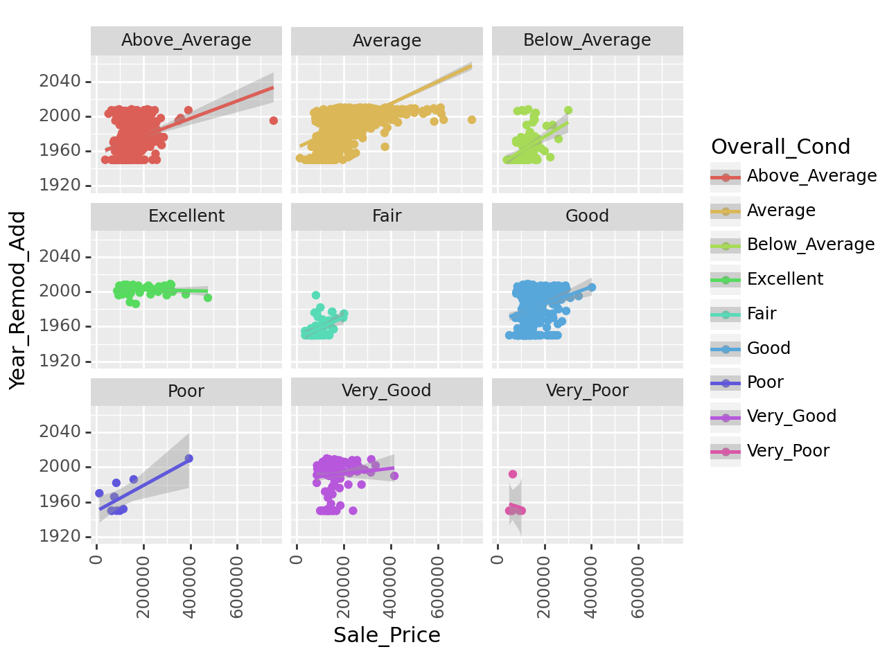
<Figure Size: (640 x 480)>Tipo de casa (House_Style)
(
ames >>
ggplot(aes(y = "Sale_Price", x = "House_Style", color = "House_Style")) +
geom_jitter(size = 0.3, alpha = 0.3) + theme(axis_text_x=element_text(angle=90))
)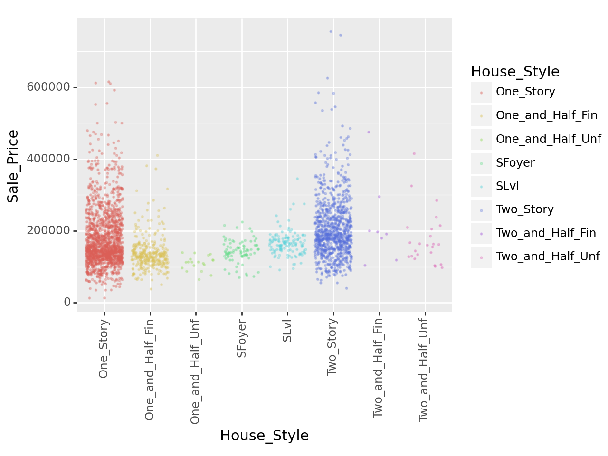
<Figure Size: (640 x 480)>El mayor número de registros se agrupa en las casas clásicas de uno y dos pisos.
Aire acondicionado (Heating_QC)
Como se indicó anteriormente en el análisis de datos atípicos en la base de datos, el aire acondicionado juega un papel importante.
El gráfico siguiente, muestra que los inmuebles con aire de típico a excelente, concentran la mayor cantidad de resultados.
Con base en consulta en Perplexity AI (es un motor de búsqueda basado en inteligencia artificial), los inviernos son muy fríos:
Durante el invierno, la temperatura máxima diaria promedio permanece alrededor de 2°C y está nublado o mayormente nublado aproximadamente el 54% del tiempo[2]. El mes de enero es el más frío, con una temperatura media de -7°C.
Enlace a Perplexity.ai consulta de temperatura en Ames, Iowa.
(
ames >>
ggplot(aes(y = "Sale_Price", x = "Heating_QC", color = "Heating_QC")) +
geom_jitter(size = 0.3, alpha = 0.3) + theme(axis_text_x=element_text(angle=90))
)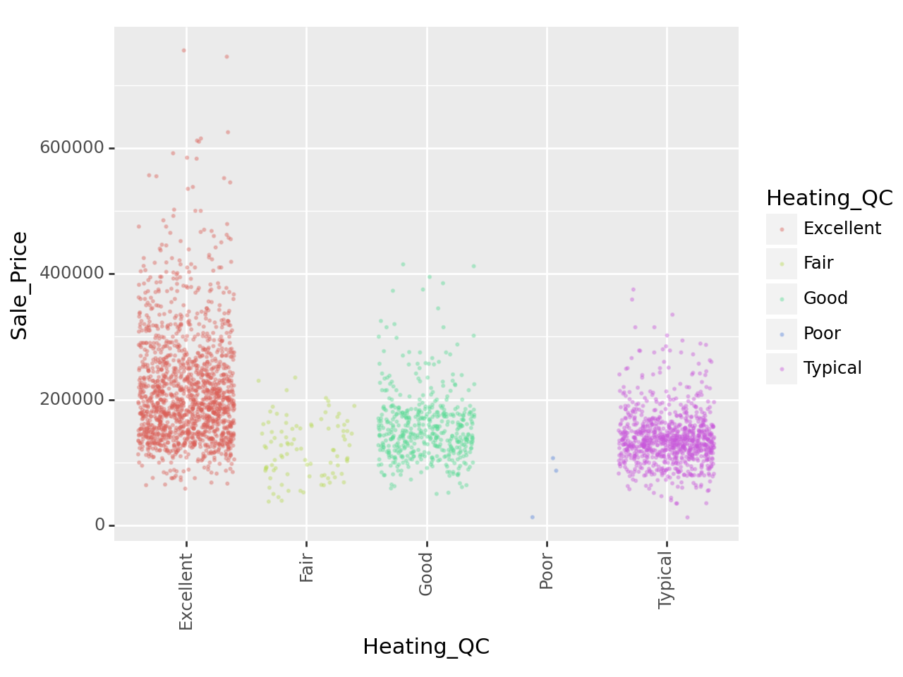
<Figure Size: (640 x 480)>Las variables útiles para predecir el Precio de Venta de una determinada casa en Ames, Iowa son las siguientes:
Area del sótano en pies cuadrados (Total_Bsmt_SF).
Superficie habitable (Gr_Liv_Area).
Pies cuadrados del primer piso (First_Flr_SF).
Capacidad de autos en el garage (Garage_Cars).
Año de remodelación (Year_Remod_Add).
Barrio (Neighborhood).
Estado general (Overall_Cond).
Se considera importante desarrollar un modelo integral propio de la ciencia de datos para predecir mejor el precio de venta con base en éstas variables.
5. Dos modelos de regresión lineal múltiple
Como sabemos, dado que tenemos más de una variable independiente, en lugar de una recta, el modelo es un hiperplano que se ajusta a partir de las covariables explicativas:
\[X_1, X_2, X_3, ..., X_m\]
La regresión lineal múltiple permite generar un modelo en el que el valor de la variable dependiente o respuesta (Precio de Venta) se determina a partir de un conjunto de variables independientes llamadas predictores, que revisamos en nuestro EDA más un término de error.
\[Y = \beta _0+\beta _1 X_1 + ...+\beta _m X_m+\epsilon\] Y es la variable respuesta, X las variables explicativas y las betas son los coeficientes parciales de regresión.
Tanto en el análisis exploratorio, como en el diferencial, hemos cuidado mantener una objetividad y no caer en sesgos, para no forzar a encontrar lo que nos gustaría en los datos.
Se desarrollan en los siguientes puntos dos modelos de regresión, del que se seleccionará el que presenta un mejor ajuste.
5.1 Condiciones para el ajuste de una regresión lineal:
Linealidad.
Distribución normal de los residuos. Ver un histograma de errores, normal centrada en cero.
Varianza de residuos constante (homocedasticidad).
Independencia. Que no exista correlación entre variables.
## Particionamos y extraemos la variable de respuesta
ames_y = ames >> pull("Sale_Price") # ames[["Sale_Price"]]
## Se seleccionan todos los demás datos en ames_x
ames_x = select(ames, -_.Sale_Price) # ames.drop('Sale_Price', axis=1)División de datos, tenemos conjuntos de test y train para x y y
ames_x_train, ames_x_test, ames_y_train, ames_y_test = train_test_split(
ames_x, ames_y,
test_size = 0.20,
random_state = 195
)5.2 Feature Engineering transformación logarítmica
Selección de variables
Utilizaremos nuestro Dataframe con 8 variables explicativas, 6 numéricas y 2 categóricas (mutate para verificar que el tipo de datos se mantenga conforme a lo requerido):
# Seleccionamos las variales numéricas de interés
num_cols = ["Total_Bsmt_SF", "Gr_Liv_Area", "Year_Remod_Add", "First_Flr_SF", "Garage_Cars", 'Full_Bath']
# Seleccionamos las variables categóricas de interés
cat_cols = ["Overall_Cond", "Neighborhood"] # R2 = 0.820
#cat_cols = ["Overall_Cond"] # R2 = .0751
#cat_cols = ["Neighborhood"] # R2 = 0.811
# Juntamos todas las variables de interés, numéricas y categóricas
columnas_seleccionadas = num_cols + cat_cols
pipe = ColumnSelector(columnas_seleccionadas)
# Arreglo con los valores que interesan:
ames_x_train_selected = pipe.fit_transform(ames_x_train)
# Recuperamos los nombres de las columnas
ames_train_selected = (pd.DataFrame(
ames_x_train_selected,
columns = columnas_seleccionadas) >>
mutate(
Total_Bsmt_SF = _.Total_Bsmt_SF.astype(int),
Gr_Liv_Area = _.Gr_Liv_Area.astype(int),
Year_Remod_Add = _.Year_Remod_Add.astype(int),
First_Flr_SF = _.First_Flr_SF.astype(int),
Garage_Cars = _.Garage_Cars.astype(int),
Full_Bath = _.Full_Bath.astype(int))
)
ames_train_selected.info()<class 'pandas.core.frame.DataFrame'>
RangeIndex: 2344 entries, 0 to 2343
Data columns (total 8 columns):
# Column Non-Null Count Dtype
--- ------ -------------- -----
0 Total_Bsmt_SF 2344 non-null int32
1 Gr_Liv_Area 2344 non-null int32
2 Year_Remod_Add 2344 non-null int32
3 First_Flr_SF 2344 non-null int32
4 Garage_Cars 2344 non-null int32
5 Full_Bath 2344 non-null int32
6 Overall_Cond 2344 non-null object
7 Neighborhood 2344 non-null object
dtypes: int32(6), object(2)
memory usage: 91.7+ KBLa selección de las variables categóricas Overall_Cond o Neighborhood, por sí solas, proporcionan una r2 de 0.751 y 0.811, respectivamente, razón por la cual se seleccionan juntas, ya que entregan una métrica de desempeño un poco mejor, de 0.820 antes de la transformación logarítmica.
5.4 Transformación de columnas
Definimos un custom_function para transformación logarítmica de dos columnas.
Creamos el objeto custom_transformer a utilizar en el pipeline.
Estandarizamos las variables numéricas separando las dos logarítmicas.
Procesamos las columnas categóricas.
Pedimos que lo demás permanezca sin cambios
def custom_function(X, col1, col2):
X[col1] = np.log1p(X[col1].astype(int))
X[col2] = np.log1p(X[col2].astype(int))
return X
custom_transformer = FunctionTransformer(custom_function, feature_names_out = 'one-to-one', validate=False, kw_args={'col1': 'Gr_Liv_Area', 'col2': 'Total_Bsmt_SF'})
# ColumnTransformer para aplicar transformaciones
preprocessor = ColumnTransformer(
transformers = [
('log_std_transform', Pipeline([
('log', custom_transformer),
('scaler', StandardScaler())]), ['Gr_Liv_Area', 'Total_Bsmt_SF']),
('scaler', StandardScaler(), list(set(num_cols) - set(["Gr_Liv_Area"]) - set(["Total_Bsmt_SF"]))),
('onehotencoding', OneHotEncoder(drop='first', sparse=False), cat_cols)
],
remainder = 'passthrough', # Mantener las columnas restantes sin cambios
)Aplicamos el ajuste y la transformación y obtenemos la matriz resultante de la dicotomización.
En el chunk previo se eliminó verbose_feature_names_out = False con la finalidad de comprobar el proceso que da lugar a la transformación de cada variable.
transformed_data = preprocessor.fit_transform(ames_train_selected)
new_column_names = preprocessor.get_feature_names_out()
transformed_df = pd.DataFrame(
transformed_data,
columns=new_column_names
)
# Matriz resultante de la dicotomización:
print(transformed_df)
transformed_df.info() log_std_transform__Gr_Liv_Area log_std_transform__Total_Bsmt_SF \
0 -0.39 -0.25
1 0.29 0.53
2 0.68 -0.39
3 -0.75 -0.25
4 -0.09 0.28
... ... ...
2339 -0.81 -0.37
2340 0.66 0.63
2341 -1.80 -0.08
2342 1.60 0.12
2343 1.53 -0.21
scaler__Garage_Cars scaler__Full_Bath scaler__First_Flr_SF \
0 0.31 0.78 -1.37
1 0.31 0.78 1.02
2 0.31 0.78 -0.08
3 0.31 -1.01 -0.12
4 0.31 -1.01 0.56
... ... ... ...
2339 -2.32 -1.01 -1.57
2340 0.31 0.78 1.53
2341 -1.01 -1.01 -0.95
2342 0.31 0.78 0.79
2343 0.31 0.78 0.67
scaler__Year_Remod_Add onehotencoding__Overall_Cond_Average \
0 1.08 1.00
1 0.99 1.00
2 -0.98 1.00
3 -1.60 1.00
4 1.04 0.00
... ... ...
2339 -0.69 0.00
2340 0.94 1.00
2341 -1.65 1.00
2342 0.70 1.00
2343 -1.65 1.00
onehotencoding__Overall_Cond_Below_Average \
0 0.00
1 0.00
2 0.00
3 0.00
4 0.00
... ...
2339 1.00
2340 0.00
2341 0.00
2342 0.00
2343 0.00
onehotencoding__Overall_Cond_Excellent \
0 0.00
1 0.00
2 0.00
3 0.00
4 0.00
... ...
2339 0.00
2340 0.00
2341 0.00
2342 0.00
2343 0.00
onehotencoding__Overall_Cond_Fair onehotencoding__Overall_Cond_Good \
0 0.00 0.00
1 0.00 0.00
2 0.00 0.00
3 0.00 0.00
4 0.00 1.00
... ... ...
2339 0.00 0.00
2340 0.00 0.00
2341 0.00 0.00
2342 0.00 0.00
2343 0.00 0.00
onehotencoding__Overall_Cond_Poor \
0 0.00
1 0.00
2 0.00
3 0.00
4 0.00
... ...
2339 0.00
2340 0.00
2341 0.00
2342 0.00
2343 0.00
onehotencoding__Overall_Cond_Very_Good \
0 0.00
1 0.00
2 0.00
3 0.00
4 0.00
... ...
2339 0.00
2340 0.00
2341 0.00
2342 0.00
2343 0.00
onehotencoding__Overall_Cond_Very_Poor \
0 0.00
1 0.00
2 0.00
3 0.00
4 0.00
... ...
2339 0.00
2340 0.00
2341 0.00
2342 0.00
2343 0.00
onehotencoding__Neighborhood_Blueste \
0 0.00
1 0.00
2 0.00
3 0.00
4 0.00
... ...
2339 0.00
2340 0.00
2341 0.00
2342 0.00
2343 0.00
onehotencoding__Neighborhood_Briardale \
0 0.00
1 0.00
2 0.00
3 0.00
4 0.00
... ...
2339 0.00
2340 0.00
2341 0.00
2342 0.00
2343 0.00
onehotencoding__Neighborhood_Brookside \
0 0.00
1 0.00
2 0.00
3 0.00
4 0.00
... ...
2339 0.00
2340 0.00
2341 0.00
2342 0.00
2343 0.00
onehotencoding__Neighborhood_Clear_Creek \
0 0.00
1 0.00
2 0.00
3 0.00
4 0.00
... ...
2339 0.00
2340 0.00
2341 0.00
2342 0.00
2343 0.00
onehotencoding__Neighborhood_College_Creek \
0 0.00
1 0.00
2 0.00
3 0.00
4 0.00
... ...
2339 0.00
2340 0.00
2341 0.00
2342 0.00
2343 0.00
onehotencoding__Neighborhood_Crawford \
0 0.00
1 0.00
2 0.00
3 0.00
4 0.00
... ...
2339 0.00
2340 0.00
2341 1.00
2342 0.00
2343 0.00
onehotencoding__Neighborhood_Edwards \
0 0.00
1 0.00
2 0.00
3 0.00
4 0.00
... ...
2339 0.00
2340 0.00
2341 0.00
2342 0.00
2343 0.00
onehotencoding__Neighborhood_Gilbert \
0 0.00
1 0.00
2 0.00
3 0.00
4 0.00
... ...
2339 0.00
2340 0.00
2341 0.00
2342 0.00
2343 0.00
onehotencoding__Neighborhood_Green_Hills \
0 0.00
1 0.00
2 0.00
3 0.00
4 0.00
... ...
2339 0.00
2340 0.00
2341 0.00
2342 0.00
2343 0.00
onehotencoding__Neighborhood_Greens \
0 0.00
1 0.00
2 0.00
3 0.00
4 0.00
... ...
2339 0.00
2340 0.00
2341 0.00
2342 0.00
2343 0.00
onehotencoding__Neighborhood_Iowa_DOT_and_Rail_Road \
0 0.00
1 0.00
2 0.00
3 0.00
4 0.00
... ...
2339 0.00
2340 0.00
2341 0.00
2342 0.00
2343 0.00
onehotencoding__Neighborhood_Landmark \
0 0.00
1 0.00
2 0.00
3 0.00
4 0.00
... ...
2339 0.00
2340 0.00
2341 0.00
2342 0.00
2343 0.00
onehotencoding__Neighborhood_Meadow_Village \
0 0.00
1 0.00
2 0.00
3 0.00
4 0.00
... ...
2339 1.00
2340 0.00
2341 0.00
2342 0.00
2343 0.00
onehotencoding__Neighborhood_Mitchell \
0 0.00
1 0.00
2 0.00
3 0.00
4 0.00
... ...
2339 0.00
2340 0.00
2341 0.00
2342 0.00
2343 0.00
onehotencoding__Neighborhood_North_Ames \
0 0.00
1 0.00
2 1.00
3 1.00
4 0.00
... ...
2339 0.00
2340 0.00
2341 0.00
2342 0.00
2343 0.00
onehotencoding__Neighborhood_Northpark_Villa \
0 0.00
1 0.00
2 0.00
3 0.00
4 0.00
... ...
2339 0.00
2340 0.00
2341 0.00
2342 0.00
2343 0.00
onehotencoding__Neighborhood_Northridge \
0 0.00
1 0.00
2 0.00
3 0.00
4 0.00
... ...
2339 0.00
2340 0.00
2341 0.00
2342 0.00
2343 0.00
onehotencoding__Neighborhood_Northridge_Heights \
0 0.00
1 1.00
2 0.00
3 0.00
4 0.00
... ...
2339 0.00
2340 1.00
2341 0.00
2342 0.00
2343 0.00
onehotencoding__Neighborhood_Northwest_Ames \
0 0.00
1 0.00
2 0.00
3 0.00
4 1.00
... ...
2339 0.00
2340 0.00
2341 0.00
2342 0.00
2343 0.00
onehotencoding__Neighborhood_Old_Town \
0 0.00
1 0.00
2 0.00
3 0.00
4 0.00
... ...
2339 0.00
2340 0.00
2341 0.00
2342 0.00
2343 1.00
onehotencoding__Neighborhood_Sawyer \
0 0.00
1 0.00
2 0.00
3 0.00
4 0.00
... ...
2339 0.00
2340 0.00
2341 0.00
2342 0.00
2343 0.00
onehotencoding__Neighborhood_Sawyer_West \
0 0.00
1 0.00
2 0.00
3 0.00
4 0.00
... ...
2339 0.00
2340 0.00
2341 0.00
2342 0.00
2343 0.00
onehotencoding__Neighborhood_Somerset \
0 1.00
1 0.00
2 0.00
3 0.00
4 0.00
... ...
2339 0.00
2340 0.00
2341 0.00
2342 1.00
2343 0.00
onehotencoding__Neighborhood_South_and_West_of_Iowa_State_University \
0 0.00
1 0.00
2 0.00
3 0.00
4 0.00
... ...
2339 0.00
2340 0.00
2341 0.00
2342 0.00
2343 0.00
onehotencoding__Neighborhood_Stone_Brook \
0 0.00
1 0.00
2 0.00
3 0.00
4 0.00
... ...
2339 0.00
2340 0.00
2341 0.00
2342 0.00
2343 0.00
onehotencoding__Neighborhood_Timberland \
0 0.00
1 0.00
2 0.00
3 0.00
4 0.00
... ...
2339 0.00
2340 0.00
2341 0.00
2342 0.00
2343 0.00
onehotencoding__Neighborhood_Veenker
0 0.00
1 0.00
2 0.00
3 0.00
4 0.00
... ...
2339 0.00
2340 0.00
2341 0.00
2342 0.00
2343 0.00
[2344 rows x 41 columns]
<class 'pandas.core.frame.DataFrame'>
RangeIndex: 2344 entries, 0 to 2343
Data columns (total 41 columns):
# Column Non-Null Count Dtype
--- ------ -------------- -----
0 log_std_transform__Gr_Liv_Area 2344 non-null float64
1 log_std_transform__Total_Bsmt_SF 2344 non-null float64
2 scaler__Garage_Cars 2344 non-null float64
3 scaler__Full_Bath 2344 non-null float64
4 scaler__First_Flr_SF 2344 non-null float64
5 scaler__Year_Remod_Add 2344 non-null float64
6 onehotencoding__Overall_Cond_Average 2344 non-null float64
7 onehotencoding__Overall_Cond_Below_Average 2344 non-null float64
8 onehotencoding__Overall_Cond_Excellent 2344 non-null float64
9 onehotencoding__Overall_Cond_Fair 2344 non-null float64
10 onehotencoding__Overall_Cond_Good 2344 non-null float64
11 onehotencoding__Overall_Cond_Poor 2344 non-null float64
12 onehotencoding__Overall_Cond_Very_Good 2344 non-null float64
13 onehotencoding__Overall_Cond_Very_Poor 2344 non-null float64
14 onehotencoding__Neighborhood_Blueste 2344 non-null float64
15 onehotencoding__Neighborhood_Briardale 2344 non-null float64
16 onehotencoding__Neighborhood_Brookside 2344 non-null float64
17 onehotencoding__Neighborhood_Clear_Creek 2344 non-null float64
18 onehotencoding__Neighborhood_College_Creek 2344 non-null float64
19 onehotencoding__Neighborhood_Crawford 2344 non-null float64
20 onehotencoding__Neighborhood_Edwards 2344 non-null float64
21 onehotencoding__Neighborhood_Gilbert 2344 non-null float64
22 onehotencoding__Neighborhood_Green_Hills 2344 non-null float64
23 onehotencoding__Neighborhood_Greens 2344 non-null float64
24 onehotencoding__Neighborhood_Iowa_DOT_and_Rail_Road 2344 non-null float64
25 onehotencoding__Neighborhood_Landmark 2344 non-null float64
26 onehotencoding__Neighborhood_Meadow_Village 2344 non-null float64
27 onehotencoding__Neighborhood_Mitchell 2344 non-null float64
28 onehotencoding__Neighborhood_North_Ames 2344 non-null float64
29 onehotencoding__Neighborhood_Northpark_Villa 2344 non-null float64
30 onehotencoding__Neighborhood_Northridge 2344 non-null float64
31 onehotencoding__Neighborhood_Northridge_Heights 2344 non-null float64
32 onehotencoding__Neighborhood_Northwest_Ames 2344 non-null float64
33 onehotencoding__Neighborhood_Old_Town 2344 non-null float64
34 onehotencoding__Neighborhood_Sawyer 2344 non-null float64
35 onehotencoding__Neighborhood_Sawyer_West 2344 non-null float64
36 onehotencoding__Neighborhood_Somerset 2344 non-null float64
37 onehotencoding__Neighborhood_South_and_West_of_Iowa_State_University 2344 non-null float64
38 onehotencoding__Neighborhood_Stone_Brook 2344 non-null float64
39 onehotencoding__Neighborhood_Timberland 2344 non-null float64
40 onehotencoding__Neighborhood_Veenker 2344 non-null float64
dtypes: float64(41)
memory usage: 750.9 KBC:\Users\52554\Documents\.virtualenvs\venv_dsml_py3_10\lib\site-packages\sklearn\preprocessing\_encoders.py:868: FutureWarning: `sparse` was renamed to `sparse_output` in version 1.2 and will be removed in 1.4. `sparse_output` is ignored unless you leave `sparse` to its default value.5.5 Pipeline y modelado Utilizaremos fit y predict
# Crear el pipeline con el feature engineering y la regresión lineal
pipeline = Pipeline([
('preprocessor', preprocessor),
('regressor', LinearRegression())
])
# Entrenar el pipeline (le damos datos entrenamiento y datos a predecir)
results = pipeline.fit(ames_train_selected, ames_y_train)
'''results es un objeto que contiene toda la
información de cómo se debe comportar el modelo'''C:\Users\52554\Documents\.virtualenvs\venv_dsml_py3_10\lib\site-packages\sklearn\preprocessing\_encoders.py:868: FutureWarning: `sparse` was renamed to `sparse_output` in version 1.2 and will be removed in 1.4. `sparse_output` is ignored unless you leave `sparse` to its default value.'results es un objeto que contiene toda la\ninformación de cómo se debe comportar el modelo'5.6 Predicciones y coeficientes de regresión
y_pred = pipeline.predict(ames_x_test)
y_pred
ames_test = (
ames_x_test >>
mutate(Sale_Price_Pred = y_pred, Sale_Price = ames_y_test)
)
#ames_test.info()
(
ames_test >>
select(_.Sale_Price, _.Sale_Price_Pred)
)| Sale_Price | Sale_Price_Pred | |
|---|---|---|
| 390 | 165000 | 169461.90 |
| 1235 | 124000 | 125843.69 |
| 2288 | 75000 | 98865.75 |
| 107 | 206000 | 203533.45 |
| 1861 | 190000 | 219533.88 |
| ... | ... | ... |
| 116 | 171000 | 169568.79 |
| 398 | 120500 | 114330.00 |
| 1253 | 146000 | 203234.84 |
| 78 | 125000 | 98177.74 |
| 714 | 110000 | 104053.05 |
586 rows × 2 columns
Extracción de coeficientes de regresión. Utiliza la librería statsmodels
X_train_with_intercept = sm.add_constant(transformed_df)
model = sm.OLS(ames_y_train, X_train_with_intercept).fit()
print(ames_y_train)
print(X_train_with_intercept)
model.summary()[171900 277500 136300 ... 96500 345000 90000]
const log_std_transform__Gr_Liv_Area log_std_transform__Total_Bsmt_SF \
0 1.00 -0.39 -0.25
1 1.00 0.29 0.53
2 1.00 0.68 -0.39
3 1.00 -0.75 -0.25
4 1.00 -0.09 0.28
... ... ... ...
2339 1.00 -0.81 -0.37
2340 1.00 0.66 0.63
2341 1.00 -1.80 -0.08
2342 1.00 1.60 0.12
2343 1.00 1.53 -0.21
scaler__Garage_Cars scaler__Full_Bath scaler__First_Flr_SF \
0 0.31 0.78 -1.37
1 0.31 0.78 1.02
2 0.31 0.78 -0.08
3 0.31 -1.01 -0.12
4 0.31 -1.01 0.56
... ... ... ...
2339 -2.32 -1.01 -1.57
2340 0.31 0.78 1.53
2341 -1.01 -1.01 -0.95
2342 0.31 0.78 0.79
2343 0.31 0.78 0.67
scaler__Year_Remod_Add onehotencoding__Overall_Cond_Average \
0 1.08 1.00
1 0.99 1.00
2 -0.98 1.00
3 -1.60 1.00
4 1.04 0.00
... ... ...
2339 -0.69 0.00
2340 0.94 1.00
2341 -1.65 1.00
2342 0.70 1.00
2343 -1.65 1.00
onehotencoding__Overall_Cond_Below_Average \
0 0.00
1 0.00
2 0.00
3 0.00
4 0.00
... ...
2339 1.00
2340 0.00
2341 0.00
2342 0.00
2343 0.00
onehotencoding__Overall_Cond_Excellent \
0 0.00
1 0.00
2 0.00
3 0.00
4 0.00
... ...
2339 0.00
2340 0.00
2341 0.00
2342 0.00
2343 0.00
onehotencoding__Overall_Cond_Fair onehotencoding__Overall_Cond_Good \
0 0.00 0.00
1 0.00 0.00
2 0.00 0.00
3 0.00 0.00
4 0.00 1.00
... ... ...
2339 0.00 0.00
2340 0.00 0.00
2341 0.00 0.00
2342 0.00 0.00
2343 0.00 0.00
onehotencoding__Overall_Cond_Poor \
0 0.00
1 0.00
2 0.00
3 0.00
4 0.00
... ...
2339 0.00
2340 0.00
2341 0.00
2342 0.00
2343 0.00
onehotencoding__Overall_Cond_Very_Good \
0 0.00
1 0.00
2 0.00
3 0.00
4 0.00
... ...
2339 0.00
2340 0.00
2341 0.00
2342 0.00
2343 0.00
onehotencoding__Overall_Cond_Very_Poor \
0 0.00
1 0.00
2 0.00
3 0.00
4 0.00
... ...
2339 0.00
2340 0.00
2341 0.00
2342 0.00
2343 0.00
onehotencoding__Neighborhood_Blueste \
0 0.00
1 0.00
2 0.00
3 0.00
4 0.00
... ...
2339 0.00
2340 0.00
2341 0.00
2342 0.00
2343 0.00
onehotencoding__Neighborhood_Briardale \
0 0.00
1 0.00
2 0.00
3 0.00
4 0.00
... ...
2339 0.00
2340 0.00
2341 0.00
2342 0.00
2343 0.00
onehotencoding__Neighborhood_Brookside \
0 0.00
1 0.00
2 0.00
3 0.00
4 0.00
... ...
2339 0.00
2340 0.00
2341 0.00
2342 0.00
2343 0.00
onehotencoding__Neighborhood_Clear_Creek \
0 0.00
1 0.00
2 0.00
3 0.00
4 0.00
... ...
2339 0.00
2340 0.00
2341 0.00
2342 0.00
2343 0.00
onehotencoding__Neighborhood_College_Creek \
0 0.00
1 0.00
2 0.00
3 0.00
4 0.00
... ...
2339 0.00
2340 0.00
2341 0.00
2342 0.00
2343 0.00
onehotencoding__Neighborhood_Crawford \
0 0.00
1 0.00
2 0.00
3 0.00
4 0.00
... ...
2339 0.00
2340 0.00
2341 1.00
2342 0.00
2343 0.00
onehotencoding__Neighborhood_Edwards \
0 0.00
1 0.00
2 0.00
3 0.00
4 0.00
... ...
2339 0.00
2340 0.00
2341 0.00
2342 0.00
2343 0.00
onehotencoding__Neighborhood_Gilbert \
0 0.00
1 0.00
2 0.00
3 0.00
4 0.00
... ...
2339 0.00
2340 0.00
2341 0.00
2342 0.00
2343 0.00
onehotencoding__Neighborhood_Green_Hills \
0 0.00
1 0.00
2 0.00
3 0.00
4 0.00
... ...
2339 0.00
2340 0.00
2341 0.00
2342 0.00
2343 0.00
onehotencoding__Neighborhood_Greens \
0 0.00
1 0.00
2 0.00
3 0.00
4 0.00
... ...
2339 0.00
2340 0.00
2341 0.00
2342 0.00
2343 0.00
onehotencoding__Neighborhood_Iowa_DOT_and_Rail_Road \
0 0.00
1 0.00
2 0.00
3 0.00
4 0.00
... ...
2339 0.00
2340 0.00
2341 0.00
2342 0.00
2343 0.00
onehotencoding__Neighborhood_Landmark \
0 0.00
1 0.00
2 0.00
3 0.00
4 0.00
... ...
2339 0.00
2340 0.00
2341 0.00
2342 0.00
2343 0.00
onehotencoding__Neighborhood_Meadow_Village \
0 0.00
1 0.00
2 0.00
3 0.00
4 0.00
... ...
2339 1.00
2340 0.00
2341 0.00
2342 0.00
2343 0.00
onehotencoding__Neighborhood_Mitchell \
0 0.00
1 0.00
2 0.00
3 0.00
4 0.00
... ...
2339 0.00
2340 0.00
2341 0.00
2342 0.00
2343 0.00
onehotencoding__Neighborhood_North_Ames \
0 0.00
1 0.00
2 1.00
3 1.00
4 0.00
... ...
2339 0.00
2340 0.00
2341 0.00
2342 0.00
2343 0.00
onehotencoding__Neighborhood_Northpark_Villa \
0 0.00
1 0.00
2 0.00
3 0.00
4 0.00
... ...
2339 0.00
2340 0.00
2341 0.00
2342 0.00
2343 0.00
onehotencoding__Neighborhood_Northridge \
0 0.00
1 0.00
2 0.00
3 0.00
4 0.00
... ...
2339 0.00
2340 0.00
2341 0.00
2342 0.00
2343 0.00
onehotencoding__Neighborhood_Northridge_Heights \
0 0.00
1 1.00
2 0.00
3 0.00
4 0.00
... ...
2339 0.00
2340 1.00
2341 0.00
2342 0.00
2343 0.00
onehotencoding__Neighborhood_Northwest_Ames \
0 0.00
1 0.00
2 0.00
3 0.00
4 1.00
... ...
2339 0.00
2340 0.00
2341 0.00
2342 0.00
2343 0.00
onehotencoding__Neighborhood_Old_Town \
0 0.00
1 0.00
2 0.00
3 0.00
4 0.00
... ...
2339 0.00
2340 0.00
2341 0.00
2342 0.00
2343 1.00
onehotencoding__Neighborhood_Sawyer \
0 0.00
1 0.00
2 0.00
3 0.00
4 0.00
... ...
2339 0.00
2340 0.00
2341 0.00
2342 0.00
2343 0.00
onehotencoding__Neighborhood_Sawyer_West \
0 0.00
1 0.00
2 0.00
3 0.00
4 0.00
... ...
2339 0.00
2340 0.00
2341 0.00
2342 0.00
2343 0.00
onehotencoding__Neighborhood_Somerset \
0 1.00
1 0.00
2 0.00
3 0.00
4 0.00
... ...
2339 0.00
2340 0.00
2341 0.00
2342 1.00
2343 0.00
onehotencoding__Neighborhood_South_and_West_of_Iowa_State_University \
0 0.00
1 0.00
2 0.00
3 0.00
4 0.00
... ...
2339 0.00
2340 0.00
2341 0.00
2342 0.00
2343 0.00
onehotencoding__Neighborhood_Stone_Brook \
0 0.00
1 0.00
2 0.00
3 0.00
4 0.00
... ...
2339 0.00
2340 0.00
2341 0.00
2342 0.00
2343 0.00
onehotencoding__Neighborhood_Timberland \
0 0.00
1 0.00
2 0.00
3 0.00
4 0.00
... ...
2339 0.00
2340 0.00
2341 0.00
2342 0.00
2343 0.00
onehotencoding__Neighborhood_Veenker
0 0.00
1 0.00
2 0.00
3 0.00
4 0.00
... ...
2339 0.00
2340 0.00
2341 0.00
2342 0.00
2343 0.00
[2344 rows x 42 columns]| Dep. Variable: | y | R-squared: | 0.798 |
| Model: | OLS | Adj. R-squared: | 0.794 |
| Method: | Least Squares | F-statistic: | 221.5 |
| Date: | Thu, 23 Nov 2023 | Prob (F-statistic): | 0.00 |
| Time: | 17:42:43 | Log-Likelihood: | -27903. |
| No. Observations: | 2344 | AIC: | 5.589e+04 |
| Df Residuals: | 2302 | BIC: | 5.613e+04 |
| Df Model: | 41 | ||
| Covariance Type: | nonrobust |
| coef | std err | t | P>|t| | [0.025 | 0.975] | |
| const | 1.776e+05 | 8142.748 | 21.812 | 0.000 | 1.62e+05 | 1.94e+05 |
| log_std_transform__Gr_Liv_Area | 2.45e+04 | 1204.952 | 20.332 | 0.000 | 2.21e+04 | 2.69e+04 |
| log_std_transform__Total_Bsmt_SF | 5956.1824 | 802.586 | 7.421 | 0.000 | 4382.315 | 7530.050 |
| scaler__Garage_Cars | 1.218e+04 | 1038.022 | 11.733 | 0.000 | 1.01e+04 | 1.42e+04 |
| scaler__Full_Bath | -584.0266 | 1148.405 | -0.509 | 0.611 | -2836.042 | 1667.989 |
| scaler__First_Flr_SF | 1.553e+04 | 1047.593 | 14.823 | 0.000 | 1.35e+04 | 1.76e+04 |
| scaler__Year_Remod_Add | 6644.3293 | 1113.313 | 5.968 | 0.000 | 4461.128 | 8827.531 |
| onehotencoding__Overall_Cond_Average | -3823.8021 | 2287.347 | -1.672 | 0.095 | -8309.279 | 661.674 |
| onehotencoding__Overall_Cond_Below_Average | -1.991e+04 | 4461.127 | -4.464 | 0.000 | -2.87e+04 | -1.12e+04 |
| onehotencoding__Overall_Cond_Excellent | 2.562e+04 | 6767.206 | 3.786 | 0.000 | 1.23e+04 | 3.89e+04 |
| onehotencoding__Overall_Cond_Fair | -2.907e+04 | 5824.820 | -4.991 | 0.000 | -4.05e+04 | -1.76e+04 |
| onehotencoding__Overall_Cond_Good | 6400.4593 | 2786.799 | 2.297 | 0.022 | 935.559 | 1.19e+04 |
| onehotencoding__Overall_Cond_Poor | -4.608e+04 | 1.23e+04 | -3.759 | 0.000 | -7.01e+04 | -2.2e+04 |
| onehotencoding__Overall_Cond_Very_Good | 8169.5095 | 4028.552 | 2.028 | 0.043 | 269.539 | 1.61e+04 |
| onehotencoding__Overall_Cond_Very_Poor | -5.97e+04 | 1.5e+04 | -3.969 | 0.000 | -8.92e+04 | -3.02e+04 |
| onehotencoding__Neighborhood_Blueste | -1295.7514 | 1.52e+04 | -0.085 | 0.932 | -3.11e+04 | 2.85e+04 |
| onehotencoding__Neighborhood_Briardale | -9511.3326 | 1.12e+04 | -0.852 | 0.394 | -3.14e+04 | 1.24e+04 |
| onehotencoding__Neighborhood_Brookside | -1.512e+04 | 9172.093 | -1.648 | 0.099 | -3.31e+04 | 2867.923 |
| onehotencoding__Neighborhood_Clear_Creek | 1.086e+04 | 9916.711 | 1.095 | 0.274 | -8590.248 | 3.03e+04 |
| onehotencoding__Neighborhood_College_Creek | 1.412e+04 | 8123.402 | 1.738 | 0.082 | -1813.024 | 3e+04 |
| onehotencoding__Neighborhood_Crawford | 1e+04 | 9064.826 | 1.103 | 0.270 | -7775.381 | 2.78e+04 |
| onehotencoding__Neighborhood_Edwards | -1.36e+04 | 8631.636 | -1.576 | 0.115 | -3.05e+04 | 3323.021 |
| onehotencoding__Neighborhood_Gilbert | 8393.2822 | 8426.473 | 0.996 | 0.319 | -8130.989 | 2.49e+04 |
| onehotencoding__Neighborhood_Green_Hills | 1.429e+05 | 3.7e+04 | 3.860 | 0.000 | 7.03e+04 | 2.15e+05 |
| onehotencoding__Neighborhood_Greens | 3.014e+04 | 1.67e+04 | 1.801 | 0.072 | -2683.211 | 6.3e+04 |
| onehotencoding__Neighborhood_Iowa_DOT_and_Rail_Road | -2.084e+04 | 9321.980 | -2.236 | 0.025 | -3.91e+04 | -2559.902 |
| onehotencoding__Neighborhood_Landmark | -1.518e+04 | 3.7e+04 | -0.411 | 0.681 | -8.77e+04 | 5.73e+04 |
| onehotencoding__Neighborhood_Meadow_Village | -1.24e+04 | 1.06e+04 | -1.167 | 0.243 | -3.32e+04 | 8429.526 |
| onehotencoding__Neighborhood_Mitchell | -9672.9712 | 8733.150 | -1.108 | 0.268 | -2.68e+04 | 7452.692 |
| onehotencoding__Neighborhood_North_Ames | -1.413e+04 | 8320.961 | -1.698 | 0.090 | -3.04e+04 | 2187.704 |
| onehotencoding__Neighborhood_Northpark_Villa | -9478.0579 | 1.21e+04 | -0.785 | 0.433 | -3.32e+04 | 1.42e+04 |
| onehotencoding__Neighborhood_Northridge | 8.58e+04 | 9209.457 | 9.317 | 0.000 | 6.77e+04 | 1.04e+05 |
| onehotencoding__Neighborhood_Northridge_Heights | 8.323e+04 | 8347.010 | 9.971 | 0.000 | 6.69e+04 | 9.96e+04 |
| onehotencoding__Neighborhood_Northwest_Ames | -9204.7207 | 8700.100 | -1.058 | 0.290 | -2.63e+04 | 7856.132 |
| onehotencoding__Neighborhood_Old_Town | -3.153e+04 | 8625.144 | -3.655 | 0.000 | -4.84e+04 | -1.46e+04 |
| onehotencoding__Neighborhood_Sawyer | -1.159e+04 | 8667.221 | -1.337 | 0.181 | -2.86e+04 | 5406.728 |
| onehotencoding__Neighborhood_Sawyer_West | 720.8618 | 8652.530 | 0.083 | 0.934 | -1.62e+04 | 1.77e+04 |
| onehotencoding__Neighborhood_Somerset | 3.02e+04 | 8287.287 | 3.644 | 0.000 | 1.39e+04 | 4.65e+04 |
| onehotencoding__Neighborhood_South_and_West_of_Iowa_State_University | -1.682e+04 | 1.02e+04 | -1.652 | 0.099 | -3.68e+04 | 3148.252 |
| onehotencoding__Neighborhood_Stone_Brook | 9.923e+04 | 9927.494 | 9.995 | 0.000 | 7.98e+04 | 1.19e+05 |
| onehotencoding__Neighborhood_Timberland | 2.719e+04 | 9170.846 | 2.965 | 0.003 | 9210.525 | 4.52e+04 |
| onehotencoding__Neighborhood_Veenker | 2.659e+04 | 1.14e+04 | 2.340 | 0.019 | 4306.833 | 4.89e+04 |
| Omnibus: | 894.853 | Durbin-Watson: | 1.966 |
| Prob(Omnibus): | 0.000 | Jarque-Bera (JB): | 15657.673 |
| Skew: | 1.340 | Prob(JB): | 0.00 |
| Kurtosis: | 15.375 | Cond. No. | 104. |
Notes:
[1] Standard Errors assume that the covariance matrix of the errors is correctly specified.
5.7 Métricas de desempeño con variables no fusionadas
pd.options.display.float_format = '{:.2f}'.format
y_obs = ames_test["Sale_Price"]
y_pred = ames_test["Sale_Price_Pred"]
me = np.mean(y_obs - y_pred)
mae = mean_absolute_error(y_obs, y_pred)
mape = mean_absolute_percentage_error(y_obs, y_pred)
mse = mean_squared_error(y_obs, y_pred)
rmse = np.sqrt(mse)
r2 = r2_score(y_obs, y_pred)
n = len(y_obs) # Número de observaciones
p = 41 # Número de predictores
r2_adj = 1 - (n - 1) / (n - p - 1) * (1 - r2)
metrics_data = {
"Metric": ["ME", "MAE", "MAPE", "MSE", "RMSE", "R^2", "R^2 Adj"],
"Value": [me, mae, mape, mse, rmse, r2, r2_adj]
}
metrics_df = pd.DataFrame(metrics_data)
metrics_df| Metric | Value | |
|---|---|---|
| 0 | ME | 1280.70 |
| 1 | MAE | 24497.20 |
| 2 | MAPE | 0.14 |
| 3 | MSE | 1460791921.48 |
| 4 | RMSE | 38220.31 |
| 5 | R^2 | 0.78 |
| 6 | R^2 Adj | 0.76 |
5.8 Feature Engineering Robust Scaler
# Seleccionamos las variales numéricas de interés
num_cols = ["Total_Bsmt_SF", "Gr_Liv_Area", "Year_Remod_Add", "First_Flr_SF", "Garage_Cars", 'Full_Bath']
# Seleccionamos las variables categóricas de interés
cat_cols = ["Overall_Cond", "Neighborhood"]
# Juntamos todas las variables de interés, numéricas y categóricas
columnas_seleccionadas = num_cols + cat_cols
pipe = ColumnSelector(columnas_seleccionadas)
# Arreglo con los valores que interesan:
ames_x_train_selected = pipe.fit_transform(ames_x_train)
# Recuperamos los nombres de las columnas
ames_train_selected = (pd.DataFrame(
ames_x_train_selected,
columns = columnas_seleccionadas) >>
mutate(
Total_Bsmt_SF = _.Total_Bsmt_SF.astype(int),
Gr_Liv_Area = _.Gr_Liv_Area.astype(int),
Year_Remod_Add = _.Year_Remod_Add.astype(int),
First_Flr_SF = _.First_Flr_SF.astype(int),
Garage_Cars = _.Garage_Cars.astype(int),
Full_Bath = _.Full_Bath.astype(int))
)
ames_train_selected.info()<class 'pandas.core.frame.DataFrame'>
RangeIndex: 2344 entries, 0 to 2343
Data columns (total 8 columns):
# Column Non-Null Count Dtype
--- ------ -------------- -----
0 Total_Bsmt_SF 2344 non-null int32
1 Gr_Liv_Area 2344 non-null int32
2 Year_Remod_Add 2344 non-null int32
3 First_Flr_SF 2344 non-null int32
4 Garage_Cars 2344 non-null int32
5 Full_Bath 2344 non-null int32
6 Overall_Cond 2344 non-null object
7 Neighborhood 2344 non-null object
dtypes: int32(6), object(2)
memory usage: 91.7+ KB5.9 Transformación de columnas
Para este modelo utilizaremos Robust Scaler con la finalidad de reducir el impacto de valores atípicos o outliers dado que se advierten valores extremos que afectan negativamente las métricas.
# ColumnTransformer para aplicar transformaciones
preprocessor = ColumnTransformer(
transformers = [
('scaler', RobustScaler(quantile_range=(25.0, 75.0), with_centering=True, with_scaling=True), num_cols),
('onehotencoding', OneHotEncoder(drop='first', sparse_output=False, handle_unknown='ignore'), cat_cols)
],
verbose_feature_names_out = False,
remainder = 'passthrough'
)transformed_data = preprocessor.fit_transform(ames_train_selected)
new_column_names = preprocessor.get_feature_names_out()
transformed_df = pd.DataFrame(
transformed_data,
columns=new_column_names
)
# Matriz resultante de la dicotomización:
print(transformed_df)
transformed_df.info() Total_Bsmt_SF Gr_Liv_Area Year_Remod_Add First_Flr_SF Garage_Cars \
0 -0.70 -0.31 0.37 -0.88 0.00
1 1.11 0.19 0.32 0.93 0.00
2 -0.88 0.54 -0.76 0.10 0.00
3 -0.69 -0.54 -1.11 0.06 0.00
4 0.34 -0.10 0.34 0.58 0.00
... ... ... ... ... ...
2339 -0.86 -0.57 -0.61 -1.04 -2.00
2340 1.50 0.51 0.29 1.31 0.00
2341 -0.43 -1.06 -1.13 -0.57 -1.00
2342 -0.03 1.54 0.16 0.75 0.00
2343 -0.63 1.45 -1.13 0.66 0.00
Full_Bath Overall_Cond_Average Overall_Cond_Below_Average \
0 0.00 1.00 0.00
1 0.00 1.00 0.00
2 0.00 1.00 0.00
3 -1.00 1.00 0.00
4 -1.00 0.00 0.00
... ... ... ...
2339 -1.00 0.00 1.00
2340 0.00 1.00 0.00
2341 -1.00 1.00 0.00
2342 0.00 1.00 0.00
2343 0.00 1.00 0.00
Overall_Cond_Excellent Overall_Cond_Fair Overall_Cond_Good \
0 0.00 0.00 0.00
1 0.00 0.00 0.00
2 0.00 0.00 0.00
3 0.00 0.00 0.00
4 0.00 0.00 1.00
... ... ... ...
2339 0.00 0.00 0.00
2340 0.00 0.00 0.00
2341 0.00 0.00 0.00
2342 0.00 0.00 0.00
2343 0.00 0.00 0.00
Overall_Cond_Poor Overall_Cond_Very_Good Overall_Cond_Very_Poor \
0 0.00 0.00 0.00
1 0.00 0.00 0.00
2 0.00 0.00 0.00
3 0.00 0.00 0.00
4 0.00 0.00 0.00
... ... ... ...
2339 0.00 0.00 0.00
2340 0.00 0.00 0.00
2341 0.00 0.00 0.00
2342 0.00 0.00 0.00
2343 0.00 0.00 0.00
Neighborhood_Blueste Neighborhood_Briardale Neighborhood_Brookside \
0 0.00 0.00 0.00
1 0.00 0.00 0.00
2 0.00 0.00 0.00
3 0.00 0.00 0.00
4 0.00 0.00 0.00
... ... ... ...
2339 0.00 0.00 0.00
2340 0.00 0.00 0.00
2341 0.00 0.00 0.00
2342 0.00 0.00 0.00
2343 0.00 0.00 0.00
Neighborhood_Clear_Creek Neighborhood_College_Creek \
0 0.00 0.00
1 0.00 0.00
2 0.00 0.00
3 0.00 0.00
4 0.00 0.00
... ... ...
2339 0.00 0.00
2340 0.00 0.00
2341 0.00 0.00
2342 0.00 0.00
2343 0.00 0.00
Neighborhood_Crawford Neighborhood_Edwards Neighborhood_Gilbert \
0 0.00 0.00 0.00
1 0.00 0.00 0.00
2 0.00 0.00 0.00
3 0.00 0.00 0.00
4 0.00 0.00 0.00
... ... ... ...
2339 0.00 0.00 0.00
2340 0.00 0.00 0.00
2341 1.00 0.00 0.00
2342 0.00 0.00 0.00
2343 0.00 0.00 0.00
Neighborhood_Green_Hills Neighborhood_Greens \
0 0.00 0.00
1 0.00 0.00
2 0.00 0.00
3 0.00 0.00
4 0.00 0.00
... ... ...
2339 0.00 0.00
2340 0.00 0.00
2341 0.00 0.00
2342 0.00 0.00
2343 0.00 0.00
Neighborhood_Iowa_DOT_and_Rail_Road Neighborhood_Landmark \
0 0.00 0.00
1 0.00 0.00
2 0.00 0.00
3 0.00 0.00
4 0.00 0.00
... ... ...
2339 0.00 0.00
2340 0.00 0.00
2341 0.00 0.00
2342 0.00 0.00
2343 0.00 0.00
Neighborhood_Meadow_Village Neighborhood_Mitchell \
0 0.00 0.00
1 0.00 0.00
2 0.00 0.00
3 0.00 0.00
4 0.00 0.00
... ... ...
2339 1.00 0.00
2340 0.00 0.00
2341 0.00 0.00
2342 0.00 0.00
2343 0.00 0.00
Neighborhood_North_Ames Neighborhood_Northpark_Villa \
0 0.00 0.00
1 0.00 0.00
2 1.00 0.00
3 1.00 0.00
4 0.00 0.00
... ... ...
2339 0.00 0.00
2340 0.00 0.00
2341 0.00 0.00
2342 0.00 0.00
2343 0.00 0.00
Neighborhood_Northridge Neighborhood_Northridge_Heights \
0 0.00 0.00
1 0.00 1.00
2 0.00 0.00
3 0.00 0.00
4 0.00 0.00
... ... ...
2339 0.00 0.00
2340 0.00 1.00
2341 0.00 0.00
2342 0.00 0.00
2343 0.00 0.00
Neighborhood_Northwest_Ames Neighborhood_Old_Town Neighborhood_Sawyer \
0 0.00 0.00 0.00
1 0.00 0.00 0.00
2 0.00 0.00 0.00
3 0.00 0.00 0.00
4 1.00 0.00 0.00
... ... ... ...
2339 0.00 0.00 0.00
2340 0.00 0.00 0.00
2341 0.00 0.00 0.00
2342 0.00 0.00 0.00
2343 0.00 1.00 0.00
Neighborhood_Sawyer_West Neighborhood_Somerset \
0 0.00 1.00
1 0.00 0.00
2 0.00 0.00
3 0.00 0.00
4 0.00 0.00
... ... ...
2339 0.00 0.00
2340 0.00 0.00
2341 0.00 0.00
2342 0.00 1.00
2343 0.00 0.00
Neighborhood_South_and_West_of_Iowa_State_University \
0 0.00
1 0.00
2 0.00
3 0.00
4 0.00
... ...
2339 0.00
2340 0.00
2341 0.00
2342 0.00
2343 0.00
Neighborhood_Stone_Brook Neighborhood_Timberland Neighborhood_Veenker
0 0.00 0.00 0.00
1 0.00 0.00 0.00
2 0.00 0.00 0.00
3 0.00 0.00 0.00
4 0.00 0.00 0.00
... ... ... ...
2339 0.00 0.00 0.00
2340 0.00 0.00 0.00
2341 0.00 0.00 0.00
2342 0.00 0.00 0.00
2343 0.00 0.00 0.00
[2344 rows x 41 columns]
<class 'pandas.core.frame.DataFrame'>
RangeIndex: 2344 entries, 0 to 2343
Data columns (total 41 columns):
# Column Non-Null Count Dtype
--- ------ -------------- -----
0 Total_Bsmt_SF 2344 non-null float64
1 Gr_Liv_Area 2344 non-null float64
2 Year_Remod_Add 2344 non-null float64
3 First_Flr_SF 2344 non-null float64
4 Garage_Cars 2344 non-null float64
5 Full_Bath 2344 non-null float64
6 Overall_Cond_Average 2344 non-null float64
7 Overall_Cond_Below_Average 2344 non-null float64
8 Overall_Cond_Excellent 2344 non-null float64
9 Overall_Cond_Fair 2344 non-null float64
10 Overall_Cond_Good 2344 non-null float64
11 Overall_Cond_Poor 2344 non-null float64
12 Overall_Cond_Very_Good 2344 non-null float64
13 Overall_Cond_Very_Poor 2344 non-null float64
14 Neighborhood_Blueste 2344 non-null float64
15 Neighborhood_Briardale 2344 non-null float64
16 Neighborhood_Brookside 2344 non-null float64
17 Neighborhood_Clear_Creek 2344 non-null float64
18 Neighborhood_College_Creek 2344 non-null float64
19 Neighborhood_Crawford 2344 non-null float64
20 Neighborhood_Edwards 2344 non-null float64
21 Neighborhood_Gilbert 2344 non-null float64
22 Neighborhood_Green_Hills 2344 non-null float64
23 Neighborhood_Greens 2344 non-null float64
24 Neighborhood_Iowa_DOT_and_Rail_Road 2344 non-null float64
25 Neighborhood_Landmark 2344 non-null float64
26 Neighborhood_Meadow_Village 2344 non-null float64
27 Neighborhood_Mitchell 2344 non-null float64
28 Neighborhood_North_Ames 2344 non-null float64
29 Neighborhood_Northpark_Villa 2344 non-null float64
30 Neighborhood_Northridge 2344 non-null float64
31 Neighborhood_Northridge_Heights 2344 non-null float64
32 Neighborhood_Northwest_Ames 2344 non-null float64
33 Neighborhood_Old_Town 2344 non-null float64
34 Neighborhood_Sawyer 2344 non-null float64
35 Neighborhood_Sawyer_West 2344 non-null float64
36 Neighborhood_Somerset 2344 non-null float64
37 Neighborhood_South_and_West_of_Iowa_State_University 2344 non-null float64
38 Neighborhood_Stone_Brook 2344 non-null float64
39 Neighborhood_Timberland 2344 non-null float64
40 Neighborhood_Veenker 2344 non-null float64
dtypes: float64(41)
memory usage: 750.9 KB5.10 Análisis del efecto de la fusión de categorías de las casas con precios más altos.
Mediante el siguiente código se fusionaron 7 categorías que contienen a las casas de mayor precio. La razón es que ahí se observa alta volatilidad en los precios.
La fusión se llevó a cabo definiendo una función que sumara los contenidos numéricos en la categoría Neighborhood_High_Price_Combined:
def combine_columns(row):
return (row['Neighborhood_Northridge'] +
row['Neighborhood_Stone_Brook'] +
row['Neighborhood_Northridge_Heights'] +
row['Neighborhood_Green_Hills'] +
row['Neighborhood_Veenker'] +
row['Neighborhood_Timberland'] +
row['Neighborhood_Somerset'])
transformed_df['Neighborhood_High_Price_Combined'] = transformed_df.apply(combine_columns, axis=1)
transformed_df = transformed_df.drop(columns=['Neighborhood_Northridge', 'Neighborhood_Stone_Brook', 'Neighborhood_Northridge_Heights', 'Neighborhood_Green_Hills', 'Neighborhood_Veenker', 'Neighborhood_Timberland', 'Neighborhood_Somerset'])
transformed_df.info()<class 'pandas.core.frame.DataFrame'>
RangeIndex: 2344 entries, 0 to 2343
Data columns (total 35 columns):
# Column Non-Null Count Dtype
--- ------ -------------- -----
0 Total_Bsmt_SF 2344 non-null float64
1 Gr_Liv_Area 2344 non-null float64
2 Year_Remod_Add 2344 non-null float64
3 First_Flr_SF 2344 non-null float64
4 Garage_Cars 2344 non-null float64
5 Full_Bath 2344 non-null float64
6 Overall_Cond_Average 2344 non-null float64
7 Overall_Cond_Below_Average 2344 non-null float64
8 Overall_Cond_Excellent 2344 non-null float64
9 Overall_Cond_Fair 2344 non-null float64
10 Overall_Cond_Good 2344 non-null float64
11 Overall_Cond_Poor 2344 non-null float64
12 Overall_Cond_Very_Good 2344 non-null float64
13 Overall_Cond_Very_Poor 2344 non-null float64
14 Neighborhood_Blueste 2344 non-null float64
15 Neighborhood_Briardale 2344 non-null float64
16 Neighborhood_Brookside 2344 non-null float64
17 Neighborhood_Clear_Creek 2344 non-null float64
18 Neighborhood_College_Creek 2344 non-null float64
19 Neighborhood_Crawford 2344 non-null float64
20 Neighborhood_Edwards 2344 non-null float64
21 Neighborhood_Gilbert 2344 non-null float64
22 Neighborhood_Greens 2344 non-null float64
23 Neighborhood_Iowa_DOT_and_Rail_Road 2344 non-null float64
24 Neighborhood_Landmark 2344 non-null float64
25 Neighborhood_Meadow_Village 2344 non-null float64
26 Neighborhood_Mitchell 2344 non-null float64
27 Neighborhood_North_Ames 2344 non-null float64
28 Neighborhood_Northpark_Villa 2344 non-null float64
29 Neighborhood_Northwest_Ames 2344 non-null float64
30 Neighborhood_Old_Town 2344 non-null float64
31 Neighborhood_Sawyer 2344 non-null float64
32 Neighborhood_Sawyer_West 2344 non-null float64
33 Neighborhood_South_and_West_of_Iowa_State_University 2344 non-null float64
34 Neighborhood_High_Price_Combined 2344 non-null float64
dtypes: float64(35)
memory usage: 641.1 KBSe eliminaron las columnas individuales a fin de evitar duplicidad.
Es importante destacar que la tabla de variables y coeficientes de regresión nos arrojaba previamente 41 variables, debido a la división de las categóricas, lo cual presentaba los siguientes aspectos a corregir:
Exceso de variables.
En su mayoría presentan desviaciones estándar altas.
Siete variables presentan un P Value alto, lo que significa alta probabilidad de que el coeficiente sea cero.
Trece variables presentan alta volatilidad dada su desviación estándar e intervalo de confianza (pasa por el cero).

Por lo anterior, se advirtió necesario fusionar a las variables para analizar el efecto predictivo del modelo dadas nuevas métricas resultantes de desempeño.
En especial fusionar Northridge, Northrige Heights y Stone Brook, donde se concentra el mayor número de propiedades con precios más altos que como se indicó en el punto 4.3.1, constituyen los datos atípicos en la variable a predecir.
5.11 Pipeline y modelado con fit y predict
pipeline = Pipeline([
('preprocessor', preprocessor),
('regressor', LinearRegression())
])
# Entrenar el pipeline (le damos datos entrenamiento y datos a predecir)
results = pipeline.fit(ames_train_selected, ames_y_train)
'''results es un objeto que contiene toda la
información de cómo se debe comportar el modelo''''results es un objeto que contiene toda la\ninformación de cómo se debe comportar el modelo'5.12 Predicciones y coeficientes de regresión
y_pred = pipeline.predict(ames_x_test)
y_pred
ames_test = (
ames_x_test >>
mutate(Sale_Price_Pred = y_pred, Sale_Price = ames_y_test)
)
#ames_test.info()
(
ames_test >>
select(_.Sale_Price, _.Sale_Price_Pred)
)| Sale_Price | Sale_Price_Pred | |
|---|---|---|
| 390 | 165000 | 156422.38 |
| 1235 | 124000 | 127606.36 |
| 2288 | 75000 | 97322.64 |
| 107 | 206000 | 203135.18 |
| 1861 | 190000 | 244038.11 |
| ... | ... | ... |
| 116 | 171000 | 168262.68 |
| 398 | 120500 | 119918.54 |
| 1253 | 146000 | 205732.84 |
| 78 | 125000 | 107382.37 |
| 714 | 110000 | 104820.55 |
586 rows × 2 columns
X_train_with_intercept = sm.add_constant(transformed_df)
model = sm.OLS(ames_y_train, X_train_with_intercept).fit()
model.summary()| Dep. Variable: | y | R-squared: | 0.804 |
| Model: | OLS | Adj. R-squared: | 0.801 |
| Method: | Least Squares | F-statistic: | 270.9 |
| Date: | Thu, 23 Nov 2023 | Prob (F-statistic): | 0.00 |
| Time: | 17:42:43 | Log-Likelihood: | -27865. |
| No. Observations: | 2344 | AIC: | 5.580e+04 |
| Df Residuals: | 2308 | BIC: | 5.601e+04 |
| Df Model: | 35 | ||
| Covariance Type: | nonrobust |
| coef | std err | t | P>|t| | [0.025 | 0.975] | |
| const | 1.803e+05 | 7956.508 | 22.657 | 0.000 | 1.65e+05 | 1.96e+05 |
| Total_Bsmt_SF | 2.129e+04 | 1528.601 | 13.926 | 0.000 | 1.83e+04 | 2.43e+04 |
| Gr_Liv_Area | 4.033e+04 | 1397.071 | 28.868 | 0.000 | 3.76e+04 | 4.31e+04 |
| Year_Remod_Add | 1.297e+04 | 1957.905 | 6.626 | 0.000 | 9134.334 | 1.68e+04 |
| First_Flr_SF | 3438.8088 | 1831.594 | 1.877 | 0.061 | -152.933 | 7030.551 |
| Garage_Cars | 1.544e+04 | 1335.699 | 11.562 | 0.000 | 1.28e+04 | 1.81e+04 |
| Full_Bath | -8147.7442 | 1997.449 | -4.079 | 0.000 | -1.21e+04 | -4230.762 |
| Overall_Cond_Average | -3413.6342 | 2240.301 | -1.524 | 0.128 | -7806.847 | 979.579 |
| Overall_Cond_Below_Average | -2.213e+04 | 4379.875 | -5.053 | 0.000 | -3.07e+04 | -1.35e+04 |
| Overall_Cond_Excellent | 2.271e+04 | 6620.424 | 3.430 | 0.001 | 9724.642 | 3.57e+04 |
| Overall_Cond_Fair | -2.961e+04 | 5710.093 | -5.185 | 0.000 | -4.08e+04 | -1.84e+04 |
| Overall_Cond_Good | 6867.1005 | 2736.058 | 2.510 | 0.012 | 1501.711 | 1.22e+04 |
| Overall_Cond_Poor | -4.888e+04 | 1.2e+04 | -4.060 | 0.000 | -7.25e+04 | -2.53e+04 |
| Overall_Cond_Very_Good | 7846.6858 | 3944.868 | 1.989 | 0.047 | 110.831 | 1.56e+04 |
| Overall_Cond_Very_Poor | -5.149e+04 | 1.48e+04 | -3.483 | 0.001 | -8.05e+04 | -2.25e+04 |
| Neighborhood_Blueste | -5995.7964 | 1.49e+04 | -0.402 | 0.688 | -3.53e+04 | 2.33e+04 |
| Neighborhood_Briardale | -1.479e+04 | 1.1e+04 | -1.348 | 0.178 | -3.63e+04 | 6718.091 |
| Neighborhood_Brookside | -1.961e+04 | 9005.278 | -2.177 | 0.030 | -3.73e+04 | -1947.504 |
| Neighborhood_Clear_Creek | 4566.2801 | 9732.489 | 0.469 | 0.639 | -1.45e+04 | 2.37e+04 |
| Neighborhood_College_Creek | 7085.1305 | 7990.097 | 0.887 | 0.375 | -8583.388 | 2.28e+04 |
| Neighborhood_Crawford | 5108.9878 | 8886.161 | 0.575 | 0.565 | -1.23e+04 | 2.25e+04 |
| Neighborhood_Edwards | -1.85e+04 | 8476.047 | -2.182 | 0.029 | -3.51e+04 | -1877.130 |
| Neighborhood_Gilbert | 5124.1532 | 8276.118 | 0.619 | 0.536 | -1.11e+04 | 2.14e+04 |
| Neighborhood_Greens | 2.302e+04 | 1.64e+04 | 1.399 | 0.162 | -9235.711 | 5.53e+04 |
| Neighborhood_Iowa_DOT_and_Rail_Road | -2.547e+04 | 9154.442 | -2.783 | 0.005 | -4.34e+04 | -7522.231 |
| Neighborhood_Landmark | -1.438e+04 | 3.63e+04 | -0.396 | 0.692 | -8.56e+04 | 5.69e+04 |
| Neighborhood_Meadow_Village | -1.856e+04 | 1.04e+04 | -1.776 | 0.076 | -3.9e+04 | 1931.735 |
| Neighborhood_Mitchell | -1.448e+04 | 8578.257 | -1.688 | 0.092 | -3.13e+04 | 2343.016 |
| Neighborhood_North_Ames | -1.861e+04 | 8164.916 | -2.279 | 0.023 | -3.46e+04 | -2596.646 |
| Neighborhood_Northpark_Villa | -1.067e+04 | 1.19e+04 | -0.899 | 0.369 | -3.39e+04 | 1.26e+04 |
| Neighborhood_Northwest_Ames | -1.446e+04 | 8540.359 | -1.693 | 0.091 | -3.12e+04 | 2286.967 |
| Neighborhood_Old_Town | -3.669e+04 | 8469.073 | -4.332 | 0.000 | -5.33e+04 | -2.01e+04 |
| Neighborhood_Sawyer | -1.494e+04 | 8513.188 | -1.755 | 0.079 | -3.16e+04 | 1750.718 |
| Neighborhood_Sawyer_West | -5127.7219 | 8503.443 | -0.603 | 0.547 | -2.18e+04 | 1.15e+04 |
| Neighborhood_South_and_West_of_Iowa_State_University | -2.472e+04 | 9994.923 | -2.474 | 0.013 | -4.43e+04 | -5124.957 |
| Neighborhood_High_Price_Combined | 4.544e+04 | 7808.265 | 5.820 | 0.000 | 3.01e+04 | 6.08e+04 |
| Omnibus: | 588.786 | Durbin-Watson: | 1.973 |
| Prob(Omnibus): | 0.000 | Jarque-Bera (JB): | 34853.161 |
| Skew: | 0.203 | Prob(JB): | 0.00 |
| Kurtosis: | 21.886 | Cond. No. | 75.5 |
Notes:
[1] Standard Errors assume that the covariance matrix of the errors is correctly specified.
5.13 Métricas de desempeño con variables fusionadas
pd.options.display.float_format = '{:.2f}'.format
y_obs = ames_test["Sale_Price"]
y_pred = ames_test["Sale_Price_Pred"]
me = np.mean(y_obs - y_pred)
mae = mean_absolute_error(y_obs, y_pred)
mape = mean_absolute_percentage_error(y_obs, y_pred)
mse = mean_squared_error(y_obs, y_pred)
rmse = np.sqrt(mse)
r2 = r2_score(y_obs, y_pred)
n = len(y_obs) # Número de observaciones
p = 35 # Número de predictores
r2_adj = 1 - (n - 1) / (n - p - 1) * (1 - r2)
metrics_data = {
"Metric": ["ME", "MAE", "MAPE", "MSE", "RMSE", "R^2", "R^2 Adj"],
"Value": [me, mae, mape, mse, rmse, r2, r2_adj]
}
metrics_df = pd.DataFrame(metrics_data)
metrics_df| Metric | Value | |
|---|---|---|
| 0 | ME | 791.64 |
| 1 | MAE | 23317.25 |
| 2 | MAPE | 0.13 |
| 3 | MSE | 1540507564.43 |
| 4 | RMSE | 39249.30 |
| 5 | R^2 | 0.77 |
| 6 | R^2 Adj | 0.75 |
5.14 Gráficos de desempeño del modelo
(
ames_test >>
ggplot(aes(x = "Sale_Price_Pred", y = "Sale_Price")) +
geom_point() +
scale_y_continuous(labels = dollar_format(digits=0, big_mark=','), limits = [0, 600000] ) +
scale_x_continuous(labels = dollar_format(digits=0, big_mark=','), limits = [0, 500000] ) +
geom_abline(color = "red") +
coord_equal() +
labs(
title = "Comparación entre predicción y observación",
x = "Predicción",
y = "Observación")
)C:\Users\52554\Documents\.virtualenvs\venv_dsml_py3_10\lib\site-packages\plotnine\layer.py:364: PlotnineWarning: geom_point : Removed 2 rows containing missing values.<Figure Size: (640 x 480)>(
ames_test >>
select(_.Sale_Price, _.Sale_Price_Pred) >>
mutate(error = _.Sale_Price - _.Sale_Price_Pred) >>
ggplot(aes(x = "error")) +
geom_histogram(color = "white", fill = "black") +
geom_vline(xintercept = 0, color = "red") +
scale_x_continuous(labels=dollar_format(big_mark=',', digits=0)) +
ylab("Conteos de clase") + xlab("Errores") +
ggtitle("Distribución de error")
)C:\Users\52554\Documents\.virtualenvs\venv_dsml_py3_10\lib\site-packages\plotnine\stats\stat_bin.py:109: PlotnineWarning: 'stat_bin()' using 'bins = 97'. Pick better value with 'binwidth'.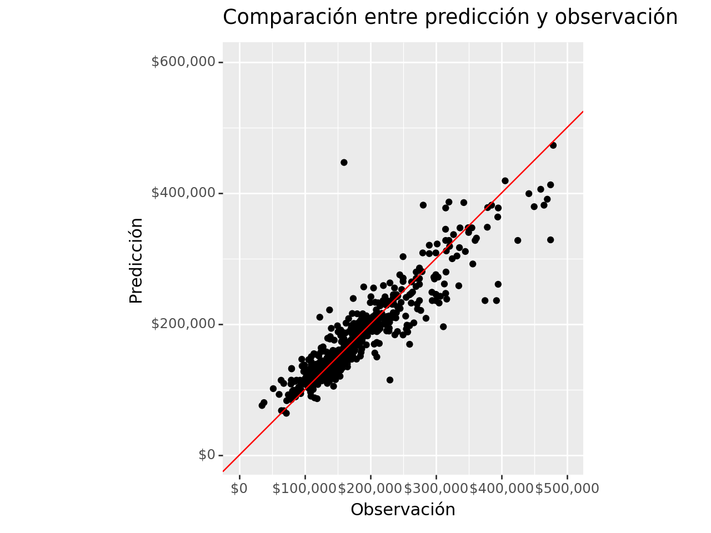
<Figure Size: (640 x 480)>(
ames_test >>
select(_.Sale_Price, _.Sale_Price_Pred) >>
mutate(error = _.Sale_Price - _.Sale_Price_Pred) >>
ggplot(aes(sample = "error")) +
geom_qq(alpha = 0.3) + stat_qq_line(color = "red") +
scale_y_continuous(labels=dollar_format(big_mark=',', digits = 0)) +
xlab("Distribución normal") + ylab("Distribución de errores") +
ggtitle("QQ-Plot")
)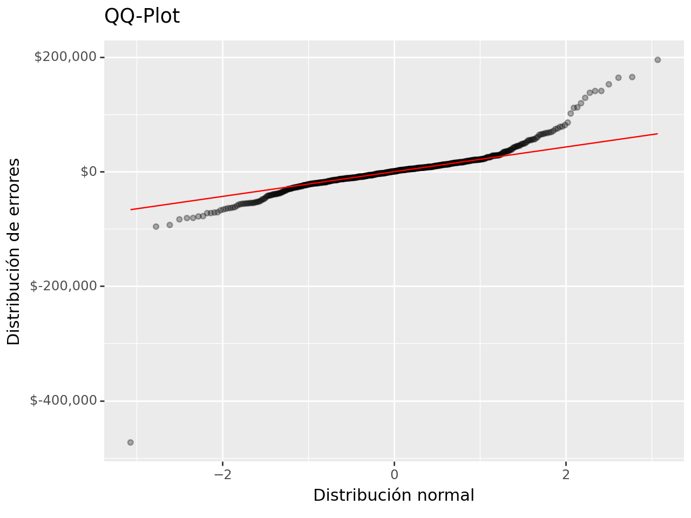
<Figure Size: (640 x 480)>(
ames_test >>
select(_.Sale_Price, _.Sale_Price_Pred) >>
mutate(error = _.Sale_Price - _.Sale_Price_Pred) >>
ggplot(aes(x = "Sale_Price")) +
geom_linerange(aes(ymin = 0, ymax = "error"), colour = "purple") +
geom_point(aes(y = "error"), size = 0.05, alpha = 0.5) +
geom_abline(intercept = 0, slope = 0) +
scale_x_continuous(labels=dollar_format(big_mark=',', digits=0)) +
scale_y_continuous(labels=dollar_format(big_mark=',', digits=0)) +
xlab("Precio real") + ylab("Error de estimación") +
ggtitle("Relación entre error y precio de venta")
)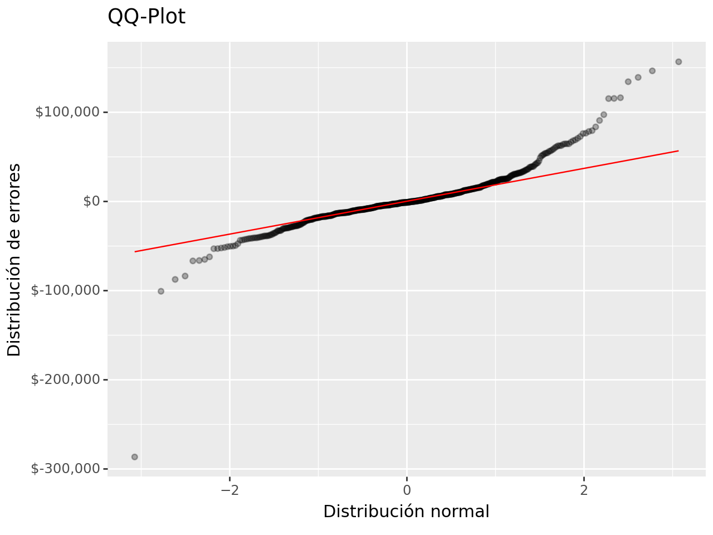
<Figure Size: (640 x 480)>6. Validación cruzada
6.1 Definición del objeto K-Fold CV y las métricas de desempeño
Con la finalidad de evaluar el rendimiento del modelo, utilizamos la técnica K-Fold Cross Validator con un KFold = 10.
La validación cruzada proporciona una estimación más precisa del rendimiento del modelo al promediar sobre múltiples particiones del conjunto de datos.
# Definir el objeto K-Fold Cross Validator
kf = KFold(n_splits=10, shuffle=True, random_state=42) # La semilla permite replicar resultados aleatorios
# Definir las métricas de desempeño que deseas calcular como funciones de puntuación
scoring = {
'neg_mean_squared_error': make_scorer(mean_squared_error, greater_is_better=False),
'r2': make_scorer(r2_score, greater_is_better=True),
'neg_mean_absolute_error': make_scorer(mean_absolute_error, greater_is_better=False),
'mape': make_scorer(mean_absolute_percentage_error, greater_is_better=False)
}6.2 Realización de validación cruzada y cálculo de estadísticas
# Realizar la validación cruzada y calcular métricas de desempeño utilizando cross_val_score
results = cross_validate(
pipeline,
ames_train_selected, ames_y_train,
cv=kf,
scoring=scoring
)
# Calcular estadísticas resumidas (media y desviación estándar) de las métricas
mean_rmse = np.mean(np.sqrt(-results['test_neg_mean_squared_error']))
std_rmse = np.std(np.sqrt(-results['test_neg_mean_squared_error']))
mean_r2 = np.mean(results['test_r2'])
std_r2 = np.std(results['test_r2'])
mean_mae = np.mean(-results['test_neg_mean_absolute_error'])
std_mae = np.std(-results['test_neg_mean_absolute_error'])
mean_mape = np.mean(-results['test_mape'])
std_mape = np.std(-results['test_mape'])C:\Users\52554\Documents\.virtualenvs\venv_dsml_py3_10\lib\site-packages\sklearn\preprocessing\_encoders.py:202: UserWarning: Found unknown categories in columns [1] during transform. These unknown categories will be encoded as all zeros
C:\Users\52554\Documents\.virtualenvs\venv_dsml_py3_10\lib\site-packages\sklearn\preprocessing\_encoders.py:202: UserWarning: Found unknown categories in columns [1] during transform. These unknown categories will be encoded as all zeros6.3 Resultados
print(f"MAE: {mean_mae} +/- {std_mae}")
print(f"MAPE: {mean_mape} +/- {std_mape}")
print(f"R^2: {mean_r2} +/- {std_r2}")
print(f"RMSE: {mean_rmse} +/- {std_rmse}")MAE: 22496.24418989381 +/- 1000.5726811589326
MAPE: 0.1348217244128888 +/- 0.008755194294539926
R^2: 0.8098793854214945 +/- 0.037187507852489185
RMSE: 34470.878997869 +/- 4028.3955006220897. Conclusiones Modelo de regresión lineal
Se utilizaron dos modelos de regresión lineal, siendo éste último reducido a 35 subcategorías el que demostró un rendimiento mejor.
Este modelo alcanza a tener un desempeño de 0.81, teniendo pendientes los siguientes ajustes y correcciones:
La selección de dos variables categóricas ocasiona que tengamos 41 categorías o predictores, mismos que redujimos a 35 con la finalidad de mitigar un poco la alta volatilidad y mejorar la capacidad predictora del modelo.
Lo anterior debido a que el cuadro detalle de regresión pone en evidencia categorías con desviación estándar alta, P Value y un intervalo de confianza que confirman una alta volatilidad que afecta negativamente la capácidad predictora del modelo.
Los gráficos de desempéño muestran alta volatilidad en particular en las casas de precios superiores.
8. K Nearest Neighbor
Mediante el procedimiento de K vecinos más cercanos pretendemos mejorar el poder de predicción.
8.1 Pipeline y modelado
Se lleva a cabo la selección del modelo con el hiper-parámetro de 10 vecinos cercanos por considerarse un equilibrio adecuado entre varianza y sesgo.
Es importante considerar la máxima de que en KNN, la decisión del hiper-parámetro k (número de vecinos) se toma con base en los datos de prueba, no los de entrenamiento. A diferencia de un modelo de regresión lineal, en donde los coeficientes se toman en cuenta basados en los datos de entrenamiento.
# Crear el pipeline con la regresión lineal
pipeline = Pipeline([
('preprocessor', preprocessor),
('regressor', KNeighborsRegressor(n_neighbors=10))
])
# Entrenar el pipeline con los datos de entrenamiento y su variable
results = pipeline.fit(ames_train_selected, ames_y_train)8.2 Predicciones
Almacenamos en el vector y_pred los datos de predicción.
y_pred = pipeline.predict(ames_x_test)
ames_test = (
ames_x_test >>
mutate(Sale_Price_Pred = y_pred, Sale_Price = ames_y_test)
)
ames_test.info()
# Comparamos predicción y observación:
(
ames_test >>
select(_.Sale_Price, _.Sale_Price_Pred)
)<class 'pandas.core.frame.DataFrame'>
Index: 586 entries, 390 to 714
Data columns (total 75 columns):
# Column Non-Null Count Dtype
--- ------ -------------- -----
0 MS_SubClass 586 non-null object
1 MS_Zoning 586 non-null object
2 Lot_Frontage 586 non-null int64
3 Lot_Area 586 non-null int64
4 Street 586 non-null object
5 Alley 586 non-null object
6 Lot_Shape 586 non-null object
7 Land_Contour 586 non-null object
8 Utilities 586 non-null object
9 Lot_Config 586 non-null object
10 Land_Slope 586 non-null object
11 Neighborhood 586 non-null object
12 Condition_1 586 non-null object
13 Condition_2 586 non-null object
14 Bldg_Type 586 non-null object
15 House_Style 586 non-null object
16 Overall_Cond 586 non-null object
17 Year_Built 586 non-null int64
18 Year_Remod_Add 586 non-null int64
19 Roof_Style 586 non-null object
20 Roof_Matl 586 non-null object
21 Exterior_1st 586 non-null object
22 Exterior_2nd 586 non-null object
23 Mas_Vnr_Type 220 non-null object
24 Mas_Vnr_Area 586 non-null int64
25 Exter_Cond 586 non-null object
26 Foundation 586 non-null object
27 Bsmt_Cond 586 non-null object
28 Bsmt_Exposure 586 non-null object
29 BsmtFin_Type_1 586 non-null object
30 BsmtFin_SF_1 586 non-null int64
31 BsmtFin_Type_2 586 non-null object
32 BsmtFin_SF_2 586 non-null int64
33 Bsmt_Unf_SF 586 non-null int64
34 Total_Bsmt_SF 586 non-null int64
35 Heating 586 non-null object
36 Heating_QC 586 non-null object
37 Central_Air 586 non-null object
38 Electrical 586 non-null object
39 First_Flr_SF 586 non-null int64
40 Second_Flr_SF 586 non-null int64
41 Gr_Liv_Area 586 non-null int64
42 Bsmt_Full_Bath 586 non-null int64
43 Bsmt_Half_Bath 586 non-null int64
44 Full_Bath 586 non-null int64
45 Half_Bath 586 non-null int64
46 Bedroom_AbvGr 586 non-null int64
47 Kitchen_AbvGr 586 non-null int64
48 TotRms_AbvGrd 586 non-null int64
49 Functional 586 non-null object
50 Fireplaces 586 non-null int64
51 Garage_Type 586 non-null object
52 Garage_Finish 586 non-null object
53 Garage_Cars 586 non-null int64
54 Garage_Area 586 non-null int64
55 Garage_Cond 586 non-null object
56 Paved_Drive 586 non-null object
57 Wood_Deck_SF 586 non-null int64
58 Open_Porch_SF 586 non-null int64
59 Enclosed_Porch 586 non-null int64
60 Three_season_porch 586 non-null int64
61 Screen_Porch 586 non-null int64
62 Pool_Area 586 non-null int64
63 Pool_QC 586 non-null object
64 Fence 586 non-null object
65 Misc_Feature 27 non-null object
66 Misc_Val 586 non-null int64
67 Mo_Sold 586 non-null int64
68 Year_Sold 586 non-null int64
69 Sale_Type 586 non-null object
70 Sale_Condition 586 non-null object
71 Longitude 586 non-null float64
72 Latitude 586 non-null float64
73 Sale_Price_Pred 586 non-null float64
74 Sale_Price 586 non-null int64
dtypes: float64(3), int64(32), object(40)
memory usage: 347.9+ KB| Sale_Price | Sale_Price_Pred | |
|---|---|---|
| 390 | 165000 | 160790.00 |
| 1235 | 124000 | 133943.80 |
| 2288 | 75000 | 90225.00 |
| 107 | 206000 | 174600.00 |
| 1861 | 190000 | 256250.00 |
| ... | ... | ... |
| 116 | 171000 | 164500.00 |
| 398 | 120500 | 124800.00 |
| 1253 | 146000 | 157180.00 |
| 78 | 125000 | 114620.00 |
| 714 | 110000 | 112640.00 |
586 rows × 2 columns
8.3 Métricas de desempeño
Añadimos la métrica RMSLE significa “Root Mean Squared Logarithmic Error” (Error Cuadrático Logarítmico Medio) buscando en ésta un resultado lo más cercano a cero posible.
pd.options.display.float_format = '{:.2f}'.format
y_obs = ames_test["Sale_Price"]
y_pred = ames_test["Sale_Price_Pred"]
me = np.mean(y_obs - y_pred)
mae = mean_absolute_error(y_obs, y_pred)
mape = mean_absolute_percentage_error(y_obs, y_pred)
mse = mean_squared_error(y_obs, y_pred)
rmse = np.sqrt(mse)
r2 = r2_score(y_obs, y_pred)
rmsle = np.sqrt(np.mean((np.log(y_pred + 1) - np.log(y_obs + 1))**2))
n = len(y_obs) # Número de observaciones
p = 35 # Número de predictores
r2_adj = 1 - (n - 1) / (n - p - 1) * (1 - r2)
metrics_data = {
"Metric": ["ME", "MAE", "MAPE", "MSE", "RMSE", "R^2", "R^2 Adj", "RMSLE"],
"Value": [me, mae, mape, mse, rmse, r2, r2_adj, rmsle]
}
metrics_df = pd.DataFrame(metrics_data)
metrics_df| Metric | Value | |
|---|---|---|
| 0 | ME | 1734.69 |
| 1 | MAE | 19651.39 |
| 2 | MAPE | 0.11 |
| 3 | MSE | 973724957.50 |
| 4 | RMSE | 31204.57 |
| 5 | R^2 | 0.85 |
| 6 | R^2 Adj | 0.84 |
| 7 | RMSLE | 0.16 |
8.4 Gráficos de desempeño del modelo
(
ames_test >>
ggplot(aes(x = "Sale_Price", y = "Sale_Price_Pred")) +
geom_point() +
scale_y_continuous(labels = dollar_format(digits=0, big_mark=','), limits = [0, 600000] ) +
scale_x_continuous(labels = dollar_format(digits=0, big_mark=','), limits = [0, 500000] ) +
geom_abline(color = "red") +
coord_equal() +
labs(
title = "Comparación entre predicción y observación",
y = "Predicción",
x = "Observación")
)C:\Users\52554\Documents\.virtualenvs\venv_dsml_py3_10\lib\site-packages\plotnine\layer.py:364: PlotnineWarning: geom_point : Removed 3 rows containing missing values.
<Figure Size: (640 x 480)>(
ames_test >>
select(_.Sale_Price, _.Sale_Price_Pred) >>
mutate(error = _.Sale_Price - _.Sale_Price_Pred) >>
ggplot(aes(x = "error")) +
geom_histogram(color = "white", fill = "black") +
geom_vline(xintercept = 0, color = "red") +
scale_x_continuous(labels=dollar_format(big_mark=',', digits=0)) +
ylab("Conteos de clase") + xlab("Errores") +
ggtitle("Distribución de error")
)C:\Users\52554\Documents\.virtualenvs\venv_dsml_py3_10\lib\site-packages\plotnine\stats\stat_bin.py:109: PlotnineWarning: 'stat_bin()' using 'bins = 73'. Pick better value with 'binwidth'.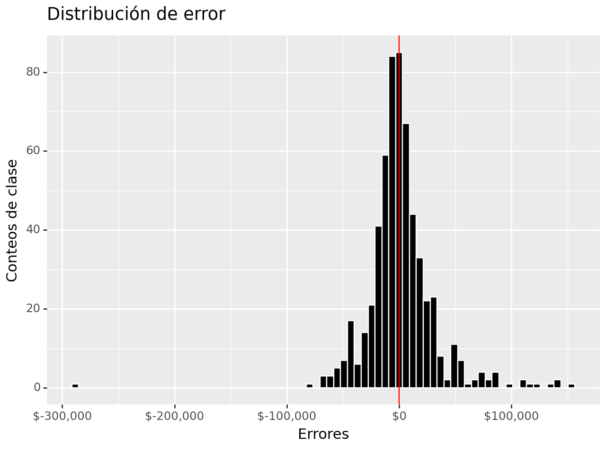
<Figure Size: (640 x 480)>(
ames_test >>
select(_.Sale_Price, _.Sale_Price_Pred) >>
mutate(error = _.Sale_Price - _.Sale_Price_Pred) >>
ggplot(aes(sample = "error")) +
geom_qq(alpha = 0.3) + stat_qq_line(color = "red") +
scale_y_continuous(labels=dollar_format(big_mark=',', digits = 0)) +
xlab("Distribución normal") + ylab("Distribución de errores") +
ggtitle("QQ-Plot")
)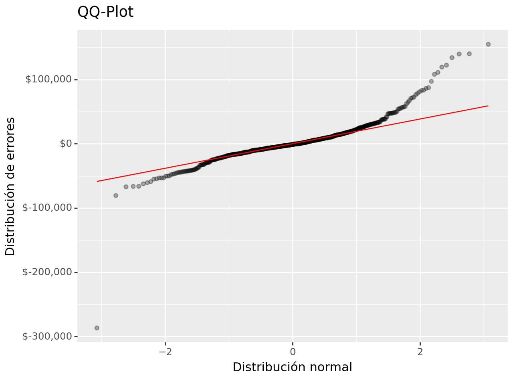
<Figure Size: (640 x 480)>(
ames_test >>
select(_.Sale_Price, _.Sale_Price_Pred) >>
mutate(error = _.Sale_Price - _.Sale_Price_Pred) >>
ggplot(aes(x = "Sale_Price")) +
geom_linerange(aes(ymin = 0, ymax = "error"), colour = "purple") +
geom_point(aes(y = "error"), size = 0.05, alpha = 0.5) +
geom_abline(intercept = 0, slope = 0) +
scale_x_continuous(labels=dollar_format(big_mark=',', digits=0)) +
scale_y_continuous(labels=dollar_format(big_mark=',', digits=0)) +
xlab("Precio real") + ylab("Error de estimación") +
ggtitle("Relación entre error y precio de venta")
)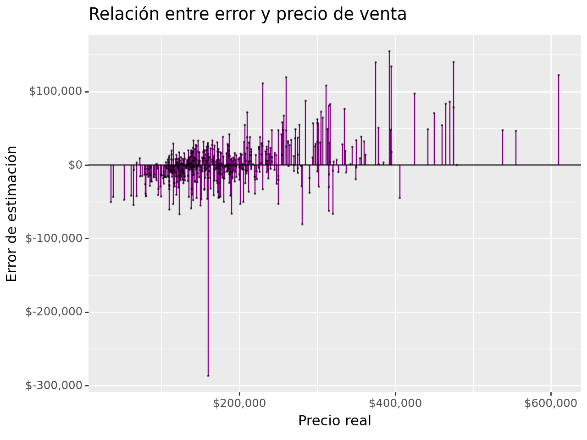
<Figure Size: (640 x 480)>9. Validación cruzada
Se define un K = 10, por regla general. Vecinos cercanos en un rango de 7 a 31, ya que en gráfico más adelante se aprecia que a partir de 19 vecinos cercanos la R2 cae de forma constante hasta 60 vecinos.
**Es necesario definir la línea de código metric’ con ‘p’: [1, 2] para evitar el *AttributeError: ‘DataFrame’ object has no attribute ‘param_p’**
# Definir el objeto K-Fold Cross Validator
k = 10
kf = KFold(n_splits=k, shuffle=True, random_state=42)
# grid o rejilla de parametrización
#param_grid = {
# 'n_neighbors': range(7, 32),
# 'weights': ['uniform', 'distance'], # uniforme y ponderada por distancia
# 'metric': ['euclidean', 'manhattan'], 'p': [1, 2]
#}
param_grid = {'n_neighbors': range(7, 32),
'weights': ['uniform', 'distance'], # uniforme y ponderada por distancia
'metric': ['euclidean', 'manhattan', 'chebyshev'], 'p': [1, 2]}
# AttributeError: 'DataFrame' object has no attribute 'param_p'# Se establecen las métricas de desempeño como funciones de puntuación
def adjusted_r2_score(y_true, y_pred, n, p):
r2 = r2_score(y_true, y_pred)
adjusted_r2 = 1 - (1 - r2) * (n - 1) / (n - p - 1)
return adjusted_r2
# Definimos el diccionario con las métricas que nos interesan:
scoring = {
'neg_mean_squared_error': make_scorer(mean_squared_error, greater_is_better=False),
'r2': make_scorer(adjusted_r2_score,
greater_is_better=True,
n=np.ceil(len(ames_train_selected)),
p=len(ames_train_selected.columns)),
'neg_mean_absolute_error': make_scorer(mean_absolute_error, greater_is_better=False),
'mape': make_scorer(mean_absolute_percentage_error, greater_is_better=False)
}
# Pipeline con el preprocesamiento (FE), el regresor de vecinos cercanos, la rejilla de parametrización
# el KF Cross Validation, las métricas definidas en scoring
# el reajuste con determinada parametrización,
# la información del proceso (verbose)
# n_jobs para aprovechar al máximo la capacidad de la computadora (4 núcleos, 8 procesadores lógicos)
pipeline = Pipeline([
('preprocessor', preprocessor),
('regressor', GridSearchCV(
KNeighborsRegressor(),
param_grid,
cv=kf,
scoring=scoring,
refit='neg_mean_squared_error',
verbose=3,
n_jobs=-1)
)
])
# Utilizamos los datos de entrenamiento
pipeline.fit(ames_train_selected, ames_y_train)
# El atributo cv_results da los resultados de cada fold, de cada métrica, de cada hiper-parámetro.
results_cv = pipeline.named_steps['regressor'].cv_results_Fitting 10 folds for each of 300 candidates, totalling 3000 fits# Convierte los resultados en un DataFrame
pd.set_option('display.max_columns', 500)
results_df = pd.DataFrame(results_cv)
results_df.columnsIndex(['mean_fit_time', 'std_fit_time', 'mean_score_time', 'std_score_time',
'param_metric', 'param_n_neighbors', 'param_p', 'param_weights',
'params', 'split0_test_neg_mean_squared_error',
'split1_test_neg_mean_squared_error',
'split2_test_neg_mean_squared_error',
'split3_test_neg_mean_squared_error',
'split4_test_neg_mean_squared_error',
'split5_test_neg_mean_squared_error',
'split6_test_neg_mean_squared_error',
'split7_test_neg_mean_squared_error',
'split8_test_neg_mean_squared_error',
'split9_test_neg_mean_squared_error',
'mean_test_neg_mean_squared_error', 'std_test_neg_mean_squared_error',
'rank_test_neg_mean_squared_error', 'split0_test_r2', 'split1_test_r2',
'split2_test_r2', 'split3_test_r2', 'split4_test_r2', 'split5_test_r2',
'split6_test_r2', 'split7_test_r2', 'split8_test_r2', 'split9_test_r2',
'mean_test_r2', 'std_test_r2', 'rank_test_r2',
'split0_test_neg_mean_absolute_error',
'split1_test_neg_mean_absolute_error',
'split2_test_neg_mean_absolute_error',
'split3_test_neg_mean_absolute_error',
'split4_test_neg_mean_absolute_error',
'split5_test_neg_mean_absolute_error',
'split6_test_neg_mean_absolute_error',
'split7_test_neg_mean_absolute_error',
'split8_test_neg_mean_absolute_error',
'split9_test_neg_mean_absolute_error',
'mean_test_neg_mean_absolute_error', 'std_test_neg_mean_absolute_error',
'rank_test_neg_mean_absolute_error', 'split0_test_mape',
'split1_test_mape', 'split2_test_mape', 'split3_test_mape',
'split4_test_mape', 'split5_test_mape', 'split6_test_mape',
'split7_test_mape', 'split8_test_mape', 'split9_test_mape',
'mean_test_mape', 'std_test_mape', 'rank_test_mape'],
dtype='object')# Puedes seleccionar las columnas de interés, quitamos splits, tiempos y 'params' a fin de ver un resumen más claro:
summary_df = (
results_df >>
select(-_.contains("split"), -_.contains("time"), -_.params)
)
summary_df| param_metric | param_n_neighbors | param_p | param_weights | mean_test_neg_mean_squared_error | std_test_neg_mean_squared_error | rank_test_neg_mean_squared_error | mean_test_r2 | std_test_r2 | rank_test_r2 | mean_test_neg_mean_absolute_error | std_test_neg_mean_absolute_error | rank_test_neg_mean_absolute_error | mean_test_mape | std_test_mape | rank_test_mape | |
|---|---|---|---|---|---|---|---|---|---|---|---|---|---|---|---|---|
| 0 | euclidean | 7 | 1 | uniform | -1091811296.29 | 264530802.16 | 155 | 0.82 | 0.05 | 157 | -21015.87 | 1415.32 | 149 | -0.13 | 0.01 | 141 |
| 1 | euclidean | 7 | 1 | distance | -1048034511.33 | 222745978.96 | 99 | 0.83 | 0.05 | 111 | -20565.00 | 1020.96 | 99 | -0.13 | 0.01 | 91 |
| 2 | euclidean | 7 | 2 | uniform | -1091811296.29 | 264530802.16 | 155 | 0.82 | 0.05 | 157 | -21015.87 | 1415.32 | 149 | -0.13 | 0.01 | 141 |
| 3 | euclidean | 7 | 2 | distance | -1048034511.33 | 222745978.96 | 99 | 0.83 | 0.05 | 111 | -20565.00 | 1020.96 | 99 | -0.13 | 0.01 | 91 |
| 4 | euclidean | 8 | 1 | uniform | -1088841670.59 | 267526880.99 | 149 | 0.83 | 0.05 | 151 | -20947.13 | 1498.63 | 143 | -0.13 | 0.01 | 139 |
| ... | ... | ... | ... | ... | ... | ... | ... | ... | ... | ... | ... | ... | ... | ... | ... | ... |
| 295 | chebyshev | 30 | 2 | distance | -1386048073.14 | 245251083.59 | 233 | 0.78 | 0.03 | 223 | -23879.93 | 1073.92 | 231 | -0.15 | 0.02 | 239 |
| 296 | chebyshev | 31 | 1 | uniform | -1571167305.28 | 289245372.59 | 299 | 0.75 | 0.04 | 299 | -26225.46 | 1320.89 | 295 | -0.17 | 0.02 | 291 |
| 297 | chebyshev | 31 | 1 | distance | -1396635370.34 | 251001322.37 | 249 | 0.78 | 0.03 | 243 | -23920.98 | 1093.88 | 241 | -0.16 | 0.02 | 245 |
| 298 | chebyshev | 31 | 2 | uniform | -1571167305.28 | 289245372.59 | 299 | 0.75 | 0.04 | 299 | -26225.46 | 1320.89 | 295 | -0.17 | 0.02 | 291 |
| 299 | chebyshev | 31 | 2 | distance | -1396635370.34 | 251001322.37 | 249 | 0.78 | 0.03 | 243 | -23920.98 | 1093.88 | 241 | -0.16 | 0.02 | 245 |
300 rows × 16 columns
El siguiente gráfico muestra un resumen del desempeño de todas las combinaciones posibles de modelos. Se concluye que la R2 óptima se obtiene con el parámetro de medición manhattan, y ponderación mediante la distancia.
La mejor medición mediante inspección visual: 14 vecinos cercanos.
(
summary_df >>
ggplot(aes(x = "param_n_neighbors", y = "mean_test_r2", size = "param_p",
color = "param_metric", shape = "param_weights")) +
geom_point(alpha = 0.65) +
ggtitle("Parametrización de KNN vs R^2") +
xlab("Parámetro: Número de vecinos cercanos") +
ylab("R^2 promedio")
)C:\Users\52554\Documents\.virtualenvs\venv_dsml_py3_10\lib\site-packages\plotnine\scales\scale_size.py:49: PlotnineWarning: Using size for a discrete variable is not advised.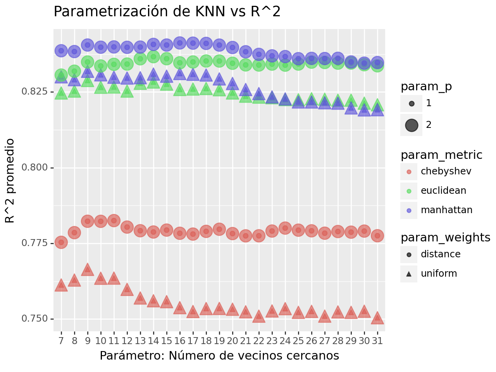
<Figure Size: (640 x 480)>En el siguiente gráfico vemos cómo la volatilidad se incrementa a partir de manera constante a partir del vecino 14, aunque también disminuye un poco el intervalo.
(
summary_df >>
filter(
_.param_weights == "uniform",
_.param_p == 1,
_.param_metric == "manhattan") >>
mutate(
ymin = np.maximum(0, _.mean_test_r2 - _.std_test_r2),
ymax = np.minimum(1, _.mean_test_r2 + _.std_test_r2)) >>
ggplot(aes(x = "param_n_neighbors", y = "mean_test_r2")) +
geom_errorbar(aes(ymin='ymin', ymax='ymax'),
width=0.3, position=position_dodge(0.9)) +
geom_point(alpha = 0.65) +
ggtitle("Parametrización de KNN vs R^2") +
xlab("Parámetro: Número de vecinos cercanos") +
ylab("R^2 promedio")
)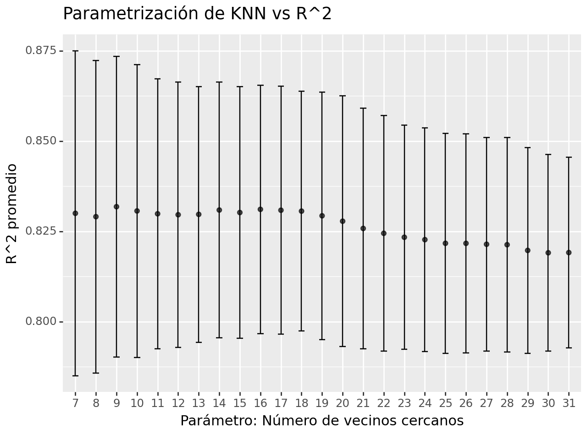
<Figure Size: (640 x 480)>A continuación utilizamos el atributo best_params_ que nos permite saber cuál es la mejor parametrización.
[‘Manhattan, 9 vecinos, peso uniforme’]
De este modo, se observa que la apreciación visual nos da a 14 como mejor vecino, sin embargo la medición precisa del mejor hiper-parámetro nos indica que son 9 los vecinos cercanos.
La utilización del mejor estimador una vez aplicado el refit, confirma que la R2 óptima se obtiene con el parámetro de medición manhattan, y ponderación mediante la distancia.
best_params = pipeline.named_steps['regressor'].best_params_
print('*'*60)
print(best_params)
best_estimator = pipeline.named_steps['regressor'].best_estimator_
print('*'*60)
print(best_estimator)************************************************************
{'metric': 'manhattan', 'n_neighbors': 9, 'p': 1, 'weights': 'distance'}
************************************************************
KNeighborsRegressor(metric='manhattan', n_neighbors=9, p=1, weights='distance')9.1 Predicciones finales
A continuación, se utiliza al mejor estimador obteniendo el modelo que mejor desempeño tiene.
final_knn_pipeline = Pipeline([
('preprocessor', preprocessor),
('regressor', best_estimator)
])
# Entrenar el pipeline
final_knn_pipeline.fit(ames_train_selected, ames_y_train)
## Predicciones finales
y_pred_knn = final_knn_pipeline.predict(ames_x_test)
results_reg = (
ames_x_test >>
mutate(final_knn_pred = y_pred_knn, Sale_Price = ames_y_test) >>
select(_.Sale_Price, _.final_knn_pred)
)
results_reg| Sale_Price | final_knn_pred | |
|---|---|---|
| 390 | 165000 | 159503.10 |
| 1235 | 124000 | 138968.43 |
| 2288 | 75000 | 79275.00 |
| 107 | 206000 | 183261.83 |
| 1861 | 190000 | 225643.62 |
| ... | ... | ... |
| 116 | 171000 | 163258.75 |
| 398 | 120500 | 76500.00 |
| 1253 | 146000 | 151324.24 |
| 78 | 125000 | 115699.22 |
| 714 | 110000 | 112194.67 |
586 rows × 2 columns
9.2 Métricas de desempeño
Las métricas de desempeño con este mejor modelo nos arrojan un 87% de precisión. Una media del error absoluto en porcentaje (MAPE) del 11%.
me = np.mean(y_obs - y_pred_knn)
mae = mean_absolute_error(y_obs, y_pred_knn)
mape = mean_absolute_percentage_error(y_obs, y_pred_knn)
mse = mean_squared_error(y_obs, y_pred_knn)
rmse = np.sqrt(mse)
r2 = r2_score(y_obs, y_pred_knn)
r2_adj = adjusted_r2_score(y_true = y_obs, y_pred = y_pred_knn,
n=np.ceil(len(ames_train_selected)), p=len(ames_train_selected.columns))
metrics_data = {
"Metric": ["ME", "MAE", "MAPE", "MSE", "RMSE", "R^2", "R^2 Adj"],
"Value": [me, mae, mape, mse, rmse, r2, r2_adj]
}
metrics_df = pd.DataFrame(metrics_data)
metrics_df| Metric | Value | |
|---|---|---|
| 0 | ME | 2577.14 |
| 1 | MAE | 18915.46 |
| 2 | MAPE | 0.11 |
| 3 | MSE | 885780685.49 |
| 4 | RMSE | 29762.07 |
| 5 | R^2 | 0.87 |
| 6 | R^2 Adj | 0.86 |
(
results_reg >>
ggplot(aes(x = "final_knn_pred", y = "Sale_Price")) +
geom_point() +
geom_abline(color = "red") +
xlab("Prediction") +
ylab("Observation") +
ggtitle("Comparisson")
)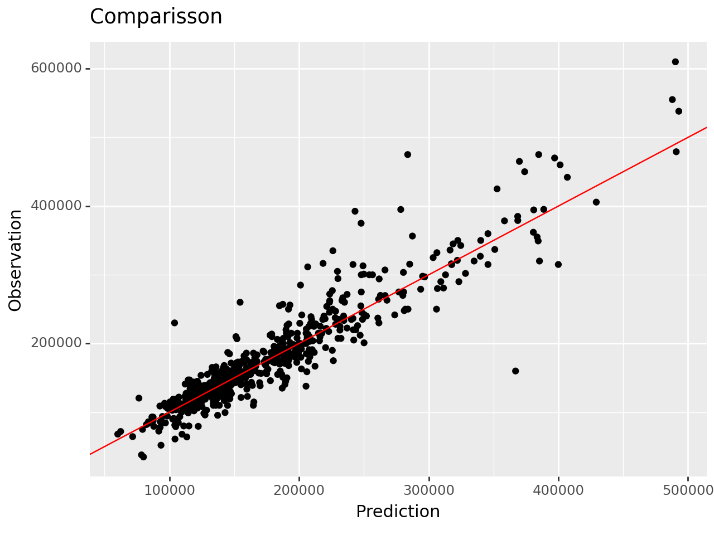
<Figure Size: (640 x 480)>9.3 Importancia de variables
Tratamos de responder a la pregunta: ¿Cuáles fueron las variables que tuvieron mayor importancia para el fenómeno?
En términos generales, podemos decir que removiendo una variable, vemos el impacto de su ausencia, y por ende, su importancia.
Esto en el procedimiento y su código se traduce en una permutación.
# 1 permutación
# Vector de importancias:
importance = np.zeros(ames_x_test[columnas_seleccionadas].shape[1])
# Realiza el procedimiento de permutación. Utiliza un iterador.
for i in range(ames_x_test[columnas_seleccionadas].shape[1]):
ames_x_test_permuted = ames_x_test[columnas_seleccionadas].copy()
ames_x_test_permuted.iloc[:, i] = shuffle(ames_x_test_permuted.iloc[:, i], random_state=42)
# Permuta una característica
y_pred_permuted = final_knn_pipeline.predict(ames_x_test_permuted)
mse_permuted = mean_squared_error(ames_y_test, y_pred_permuted)
importance[i] = mse - mse_permuted
# Calcula la importancia relativa
importance = importance / importance.sum()
print('*'*60)
print(importance)
importance_df = pd.DataFrame({
'Variable': columnas_seleccionadas,
'Importance': importance
})************************************************************
[0.10792925 0.33891192 0.04296171 0.09891188 0.13125641 0.00445849
0.02234291 0.25322744](
importance_df >>
ggplot(aes(x= 'reorder(Variable, Importance)', y='Importance')) +
geom_bar(stat='identity', fill='blue', color = "black") +
labs(title='Importancia de las Variables', x='Variable', y='Importancia') +
coord_flip()
)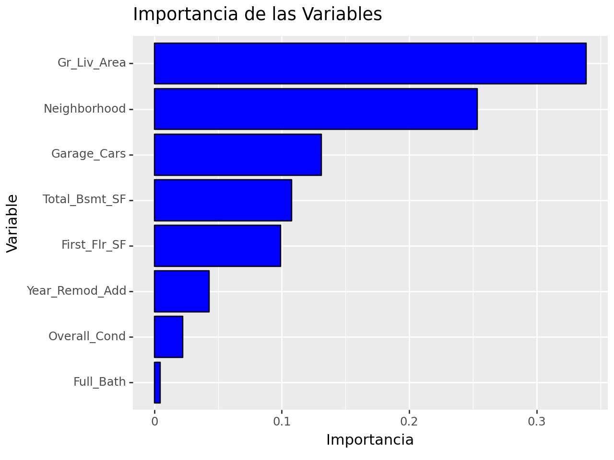
<Figure Size: (640 x 480)>A continuación utilizaremos 100 permutaciones para asegurarnos de tener una mayor precisión en la determinación de la importancia de las variables.
# N permutaciones
n_permutations = 100
performance_losses = []
for i in range(ames_x_test[columnas_seleccionadas].shape[1]):
loss = []
for j in range(n_permutations):
ames_x_test_permuted = ames_x_test[columnas_seleccionadas].copy()
ames_x_test_permuted.iloc[:, i] = np.random.permutation(ames_x_test_permuted.iloc[:, i])
y_pred_permuted = final_knn_pipeline.predict(ames_x_test_permuted)
mse_permuted = mean_squared_error(ames_y_test, y_pred_permuted)
loss.append(mse_permuted)
performance_losses.append(loss)
performance_losses = performance_losses/np.sum(performance_losses, axis=0)
mean_losses = np.mean(performance_losses, axis=1)
std_losses = np.std(performance_losses, axis=1)
importance_df = pd.DataFrame({
'Variable': columnas_seleccionadas,
'Mean_Loss': mean_losses,
'Std_Loss': std_losses
})
print(importance_df) Variable Mean_Loss Std_Loss
0 Total_Bsmt_SF 0.12 0.00
1 Gr_Liv_Area 0.18 0.01
2 Year_Remod_Add 0.10 0.00
3 First_Flr_SF 0.12 0.00
4 Garage_Cars 0.13 0.00
5 Full_Bath 0.09 0.00
6 Overall_Cond 0.10 0.00
7 Neighborhood 0.16 0.01(
importance_df >>
mutate(
ymin = _.Mean_Loss - _.Std_Loss,
ymax = _.Mean_Loss + _.Std_Loss) >>
ggplot(aes(x = 'reorder(Variable, Mean_Loss)', y = "Mean_Loss")) +
geom_errorbar(aes(ymin='ymin', ymax='ymax'),
width=0.2, position=position_dodge(0.9)) +
geom_point(alpha = 0.65) +
labs(title='Importancia de las Variables', x='Variable', y='Importancia') +
coord_flip()
)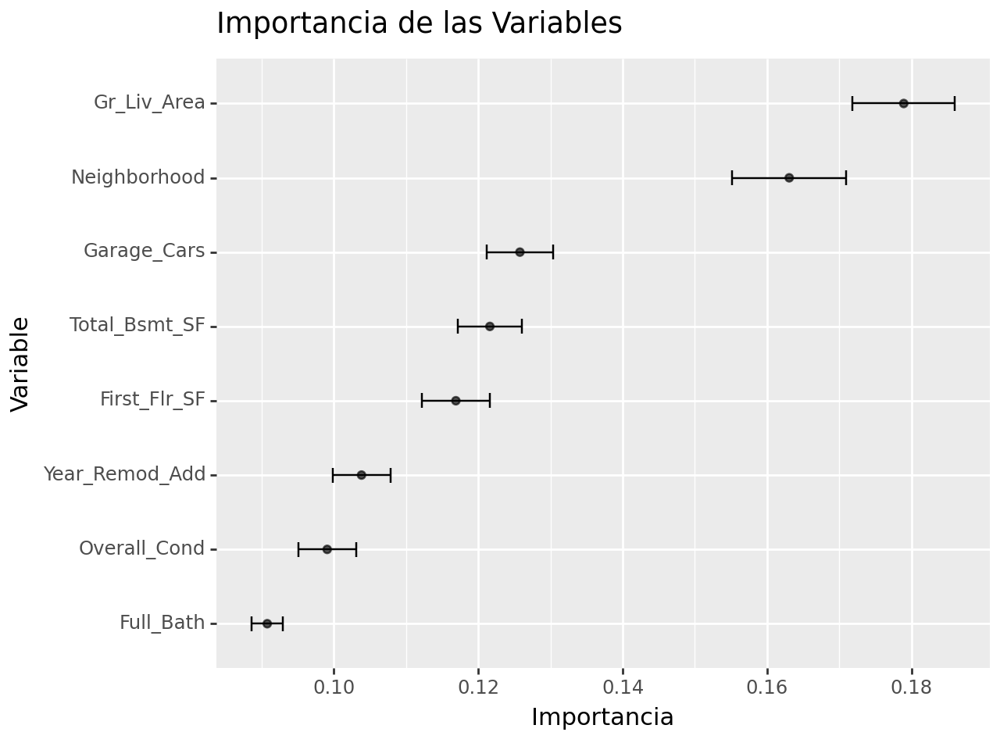
<Figure Size: (640 x 480)>10. Random Forest
10.1 Pipeline y modelado
# Crear el pipeline con la regresión por Random Forest
pipeline = Pipeline([
('preprocessor', preprocessor),
('regressor', RandomForestRegressor(
n_estimators=100, # Árboles a introducir
max_depth = 7, # Niveles - profundidad del árbol
min_samples_split=10, # Mínimo de elementos en nodo para que sea dividido
min_samples_leaf=10, # Mínimo de elementos en nodo para que sea dividido
random_state=12345))
])# Entrenar el pipeline
results = pipeline.fit(ames_train_selected, ames_y_train)10.2 Predicciones
y_pred = pipeline.predict(ames_x_test)
ames_test = (
ames_x_test >>
mutate(Sale_Price_Pred = y_pred, Sale_Price = ames_y_test)
)
(
ames_test >>
select(_.Sale_Price, _.Sale_Price_Pred)
)| Sale_Price | Sale_Price_Pred | |
|---|---|---|
| 390 | 165000 | 161724.48 |
| 1235 | 124000 | 141344.98 |
| 2288 | 75000 | 94086.22 |
| 107 | 206000 | 170907.29 |
| 1861 | 190000 | 196400.31 |
| ... | ... | ... |
| 116 | 171000 | 163644.65 |
| 398 | 120500 | 124820.89 |
| 1253 | 146000 | 195305.76 |
| 78 | 125000 | 117240.69 |
| 714 | 110000 | 119017.53 |
586 rows × 2 columns
10.3 Métricas de desempeño
pd.options.display.float_format = '{:.2f}'.format
y_obs = ames_test["Sale_Price"]
y_pred = ames_test["Sale_Price_Pred"]
me = np.mean(y_obs - y_pred)
mae = mean_absolute_error(y_obs, y_pred)
mape = mean_absolute_percentage_error(y_obs, y_pred)
mse = mean_squared_error(y_obs, y_pred)
rmse = np.sqrt(mse)
r2 = r2_score(y_obs, y_pred)
n = len(y_obs) # Número de observaciones
p = 35 # Número de predictores
r2_adj = 1 - (n - 1) / (n - p - 1) * (1 - r2)
metrics_data = {
"Metric": ["ME", "MAE", "MAPE", "MSE", "RMSE", "R^2", "R^2 Adj"],
"Value": [me, mae, mape, mse, rmse, r2, r2_adj]
}
metrics_df = pd.DataFrame(metrics_data)
metrics_df| Metric | Value | |
|---|---|---|
| 0 | ME | 1339.13 |
| 1 | MAE | 20865.26 |
| 2 | MAPE | 0.12 |
| 3 | MSE | 1015238204.14 |
| 4 | RMSE | 31862.80 |
| 5 | R^2 | 0.85 |
| 6 | R^2 Adj | 0.84 |
10.4 Gráficos de desempeño
(
ames_test >>
ggplot(aes(x = "Sale_Price", y = "Sale_Price_Pred")) +
geom_point() +
scale_y_continuous(labels = dollar_format(digits=0, big_mark=','), limits = [0, 600000] ) +
scale_x_continuous(labels = dollar_format(digits=0, big_mark=','), limits = [0, 500000] ) +
geom_abline(color = "red") +
coord_equal() +
labs(
title = "Comparación entre predicción y observación",
y = "Predicción",
x = "Observación")
)C:\Users\52554\Documents\.virtualenvs\venv_dsml_py3_10\lib\site-packages\plotnine\layer.py:364: PlotnineWarning: geom_point : Removed 3 rows containing missing values.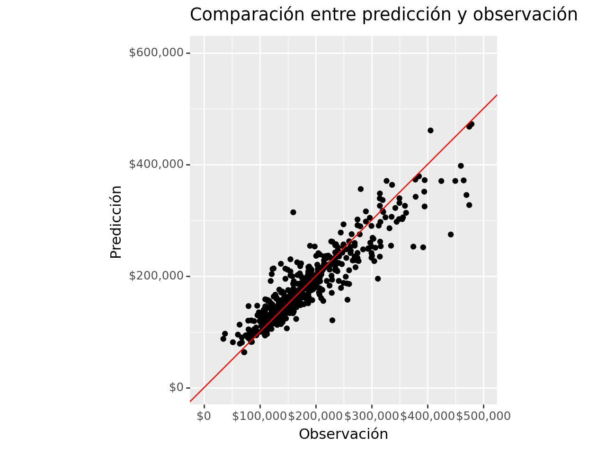
<Figure Size: (640 x 480)>(
ames_test >>
select(_.Sale_Price, _.Sale_Price_Pred) >>
mutate(error = _.Sale_Price - _.Sale_Price_Pred) >>
ggplot(aes(x = "error")) +
geom_histogram(color = "white", fill = "black") +
geom_vline(xintercept = 0, color = "red") +
scale_x_continuous(labels=dollar_format(big_mark=',', digits=0)) +
ylab("Conteos de clase") + xlab("Errores") +
ggtitle("Distribución de error")
)C:\Users\52554\Documents\.virtualenvs\venv_dsml_py3_10\lib\site-packages\plotnine\stats\stat_bin.py:109: PlotnineWarning: 'stat_bin()' using 'bins = 53'. Pick better value with 'binwidth'.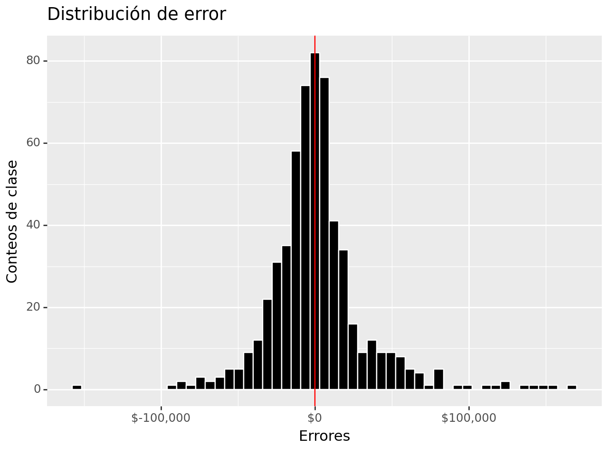
<Figure Size: (640 x 480)>(
ames_test >>
select(_.Sale_Price, _.Sale_Price_Pred) >>
mutate(error = _.Sale_Price - _.Sale_Price_Pred) >>
ggplot(aes(sample = "error")) +
geom_qq(alpha = 0.3) + stat_qq_line(color = "red") +
scale_y_continuous(labels=dollar_format(big_mark=',', digits = 0)) +
xlab("Distribución normal") + ylab("Distribución de errores") +
ggtitle("QQ-Plot")
)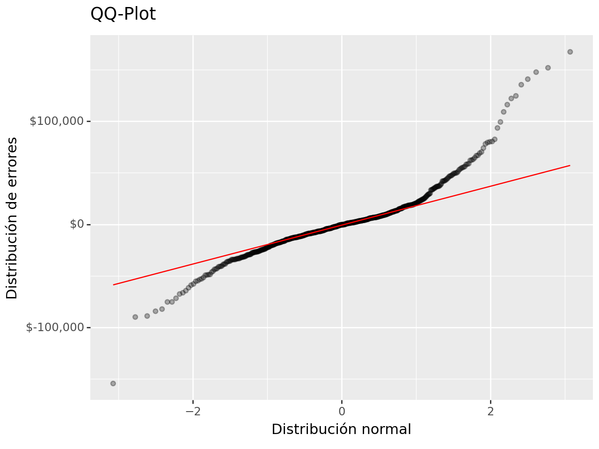
<Figure Size: (640 x 480)>(
ames_test >>
select(_.Sale_Price, _.Sale_Price_Pred) >>
mutate(error = _.Sale_Price - _.Sale_Price_Pred) >>
ggplot(aes(x = "Sale_Price")) +
geom_linerange(aes(ymin = 0, ymax = "error"), colour = "purple") +
geom_point(aes(y = "error"), size = 0.05, alpha = 0.5) +
geom_abline(intercept = 0, slope = 0) +
scale_x_continuous(labels=dollar_format(big_mark=',', digits=0)) +
scale_y_continuous(labels=dollar_format(big_mark=',', digits=0)) +
xlab("Precio real") + ylab("Error de estimación") +
ggtitle("Relación entre error y precio de venta")
)
<Figure Size: (640 x 480)>10.5 Validación Cruzada
# Definir el objeto K-Fold Cross Validator
k = 10
kf = KFold(n_splits=k, shuffle=True, random_state=42)
param_grid = {
'max_depth': range(2, 8),
'min_samples_split': range(2, 11),
'min_samples_leaf': range(2, 11),
'max_features': range(1, 9)
}10.6 Métricas de desempeño
# Definir las métricas de desempeño que deseas calcular como funciones de puntuación
def adjusted_r2_score(y_true, y_pred, n, p):
r2 = r2_score(y_true, y_pred)
adjusted_r2 = 1 - (1 - r2) * (n - 1) / (n - p - 1)
return adjusted_r2
scoring = {
'neg_mean_squared_error': make_scorer(mean_squared_error, greater_is_better=False),
'r2': make_scorer(adjusted_r2_score, greater_is_better=True,
n=np.ceil(len(ames_train_selected)), p=len(ames_train_selected.columns)),
'neg_mean_absolute_error': make_scorer(mean_absolute_error, greater_is_better=False),
'mape': make_scorer(mean_absolute_percentage_error, greater_is_better=False)
}10.7 Pipeline y modelado
Se comentan las líneas: pipeline.fit y pickle.dump
Lo anterior debido a que fueron ejecutadas previamente dada la duración del proceso.
pipeline = Pipeline([
('preprocessor', preprocessor),
('regressor', GridSearchCV(
RandomForestRegressor(),
param_grid = param_grid,
cv=kf,
scoring=scoring,
refit='neg_mean_squared_error',
verbose=2,
n_jobs=None,
error_score='raise')
)
])
#******************************************************
#pipeline.fit(ames_train_selected, ames_y_train)
#pickle.dump(pipeline, open('models/grid_search_random_forest.pkl', 'wb'))
#******************************************************
pipeline = pickle.load(open('models/grid_search_random_forest.pkl', 'rb'))
results_cv = pipeline.named_steps['regressor'].cv_results_10.8 Creación de dataframe y selección de columnas de interés
# Convierte los resultados en un DataFrame
pd.set_option('display.max_columns', 500)
results_df = pd.DataFrame(results_cv)
results_df.columns
# Puedes seleccionar las columnas de interés, por ejemplo:
summary_df = (
results_df >>
select(-_.contains("split._"), -_.contains("time"), -_.params)
)
summary_df| param_max_depth | param_max_features | param_min_samples_leaf | param_min_samples_split | mean_test_neg_mean_squared_error | std_test_neg_mean_squared_error | rank_test_neg_mean_squared_error | mean_test_r2 | std_test_r2 | rank_test_r2 | mean_test_neg_mean_absolute_error | std_test_neg_mean_absolute_error | rank_test_neg_mean_absolute_error | mean_test_mape | std_test_mape | rank_test_mape | |
|---|---|---|---|---|---|---|---|---|---|---|---|---|---|---|---|---|
| 0 | 2 | 1 | 2 | 2 | -4925514438.41 | 617524665.86 | 3847 | 0.22 | 0.03 | 3850 | -49897.43 | 1726.64 | 3844 | -0.33 | 0.03 | 3844 |
| 1 | 2 | 1 | 2 | 3 | -4932361093.82 | 675356128.75 | 3851 | 0.22 | 0.03 | 3848 | -49879.72 | 2266.50 | 3842 | -0.33 | 0.03 | 3841 |
| 2 | 2 | 1 | 2 | 4 | -4884594855.73 | 637523424.14 | 3826 | 0.23 | 0.03 | 3824 | -49562.89 | 1971.08 | 3821 | -0.32 | 0.03 | 3821 |
| 3 | 2 | 1 | 2 | 5 | -4801672399.57 | 576215872.34 | 3808 | 0.24 | 0.02 | 3809 | -49062.95 | 1731.79 | 3808 | -0.32 | 0.03 | 3808 |
| 4 | 2 | 1 | 2 | 6 | -4819445372.17 | 635405304.82 | 3811 | 0.24 | 0.03 | 3810 | -49328.75 | 2228.66 | 3812 | -0.32 | 0.03 | 3814 |
| ... | ... | ... | ... | ... | ... | ... | ... | ... | ... | ... | ... | ... | ... | ... | ... | ... |
| 3883 | 7 | 8 | 10 | 6 | -1290327986.91 | 266068084.68 | 190 | 0.80 | 0.03 | 185 | -22829.14 | 1488.34 | 117 | -0.15 | 0.02 | 109 |
| 3884 | 7 | 8 | 10 | 7 | -1301629510.77 | 281607225.43 | 211 | 0.79 | 0.03 | 212 | -23002.21 | 1543.28 | 157 | -0.15 | 0.02 | 142 |
| 3885 | 7 | 8 | 10 | 8 | -1312332485.08 | 286584387.45 | 234 | 0.79 | 0.03 | 231 | -22990.65 | 1477.32 | 151 | -0.15 | 0.02 | 131 |
| 3886 | 7 | 8 | 10 | 9 | -1319740462.42 | 286596241.46 | 261 | 0.79 | 0.03 | 255 | -23028.48 | 1423.33 | 168 | -0.15 | 0.02 | 137 |
| 3887 | 7 | 8 | 10 | 10 | -1327437292.04 | 280309505.95 | 281 | 0.79 | 0.03 | 269 | -22975.05 | 1482.25 | 148 | -0.15 | 0.02 | 121 |
3888 rows × 16 columns
10.9 Creación de gráficos
(
summary_df >>
ggplot(aes(x = "param_max_features", y = "mean_test_r2", fill = "param_max_depth")) +
geom_point() +
ggtitle("Parametrización de Random Forest vs R^2") +
xlab("Parámetro: Número de features por árbol") +
ylab("R^2 promedio")
)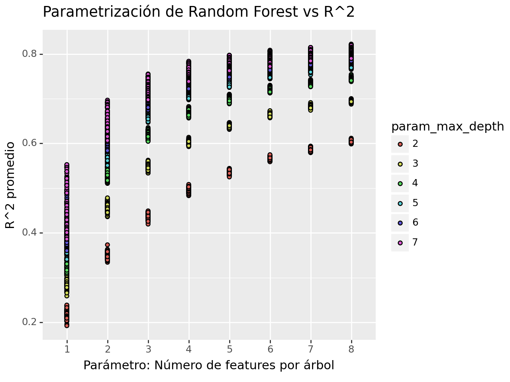
<Figure Size: (640 x 480)>Podemos apreciar modelos que van incrementando su R2 a medida que se incrementan los features y con el mejor desempeño que cuentan con 8 features por árbol.
(
summary_df >>
select(_.param_max_depth, _.param_max_features, _.param_min_samples_leaf,
_.param_min_samples_split, _.mean_test_r2) >>
pivot_longer(
cols = ["param_max_depth", "param_max_features", "param_min_samples_leaf", "param_min_samples_split"],
names_to="parameter",
values_to="value") >>
ggplot(aes(x = "value", y = "mean_test_r2")) +
geom_point(size = 1, ) +
facet_wrap("~parameter", scales = "free_x") +
xlab("Parameter value") +
ylab("R^2 promedio") +
ggtitle("Parametrización de Random Forest vs R^2")
)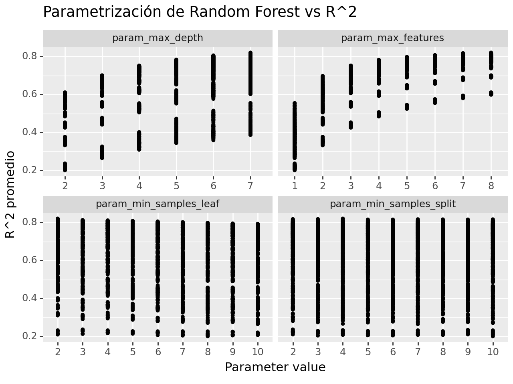
<Figure Size: (640 x 480)>best_params = pipeline.named_steps['regressor'].best_params_
best_params
best_estimator = pipeline.named_steps['regressor'].best_estimator_
best_estimatorRandomForestRegressor(max_depth=7, max_features=8, min_samples_leaf=2,
min_samples_split=3)In a Jupyter environment, please rerun this cell to show the HTML representation or trust the notebook. On GitHub, the HTML representation is unable to render, please try loading this page with nbviewer.org.
RandomForestRegressor(max_depth=7, max_features=8, min_samples_leaf=2,
min_samples_split=3)10.10 Predicciones finales
final_rf_pipeline = Pipeline([
('preprocessor', preprocessor),
('regressor', best_estimator)
])
# Entrenar el pipeline
final_rf_pipeline.fit(ames_train_selected, ames_y_train)
## Predicciones finales
y_pred_rf = final_rf_pipeline.predict(ames_x_test)
results_reg = (
ames_x_test >>
mutate(final_rf_pred = y_pred_rf, Sale_Price = ames_y_test) >>
select(_.Sale_Price, _.final_rf_pred)
)
results_reg| Sale_Price | final_rf_pred | |
|---|---|---|
| 390 | 165000 | 164759.90 |
| 1235 | 124000 | 134825.46 |
| 2288 | 75000 | 99577.60 |
| 107 | 206000 | 161183.36 |
| 1861 | 190000 | 199711.51 |
| ... | ... | ... |
| 116 | 171000 | 154492.54 |
| 398 | 120500 | 128779.53 |
| 1253 | 146000 | 193572.84 |
| 78 | 125000 | 120876.73 |
| 714 | 110000 | 119910.48 |
586 rows × 2 columns
10.11 Métricas de desempeño
me = np.mean(y_obs - y_pred_rf)
mae = mean_absolute_error(y_obs, y_pred_rf)
mape = mean_absolute_percentage_error(y_obs, y_pred_rf)
mse = mean_squared_error(y_obs, y_pred_rf)
rmse = np.sqrt(mse)
r2 = r2_score(y_obs, y_pred_rf)
r2_adj = adjusted_r2_score(y_true = y_obs, y_pred = y_pred_rf,
n=np.ceil(len(ames_train_selected)), p=len(ames_train_selected.columns))
metrics_data = {
"Metric": ["ME", "MAE", "MAPE", "MSE", "RMSE", "R^2", "R^2 Adj"],
"Value": [me, mae, mape, mse, rmse, r2, r2_adj]
}
metrics_df = pd.DataFrame(metrics_data)
metrics_df| Metric | Value | |
|---|---|---|
| 0 | ME | 1024.65 |
| 1 | MAE | 21756.10 |
| 2 | MAPE | 0.13 |
| 3 | MSE | 1107973179.33 |
| 4 | RMSE | 33286.23 |
| 5 | R^2 | 0.83 |
| 6 | R^2 Adj | 0.83 |
10.12 Creación de gráficos
(
results_reg >>
ggplot(aes(x = "final_rf_pred", y = "Sale_Price")) +
geom_point() +
geom_abline(color = "red") +
xlab("Prediction") +
ylab("Observation") +
ggtitle("Comparisson")
)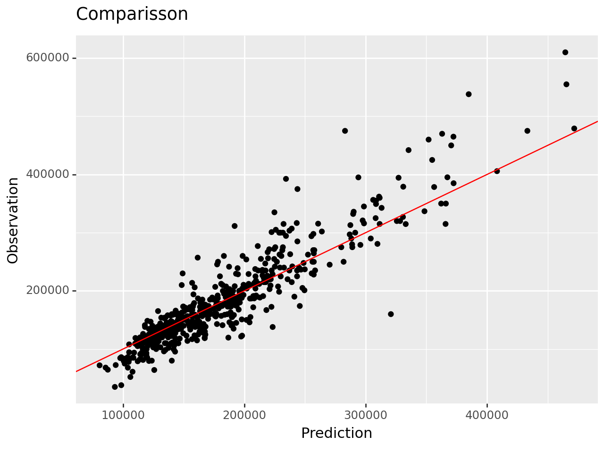
<Figure Size: (640 x 480)>10.13 Importancia de variables
# 1 permutación
importance = np.zeros(ames_x_test[columnas_seleccionadas].shape[1])
# Realiza el procedimiento de permutación
for i in range(ames_x_test[columnas_seleccionadas].shape[1]):
ames_x_test_permuted = ames_x_test[columnas_seleccionadas].copy()
ames_x_test_permuted.iloc[:, i] = shuffle(ames_x_test_permuted.iloc[:, i], random_state=42)
# Permuta una característica
y_pred_permuted = final_rf_pipeline.predict(ames_x_test_permuted)
mse_permuted = mean_squared_error(ames_y_test, y_pred_permuted)
importance[i] = mse - mse_permuted
# Calcula la importancia relativa
importance = importance / importance.sum()
importance
importance_df = pd.DataFrame({
'Variable': columnas_seleccionadas,
'Importance': importance
})10.14 Creación de gráficos
(
importance_df >>
ggplot(aes(x= 'reorder(Variable, Importance)', y='Importance')) +
geom_bar(stat='identity', fill='blue', color = "black") +
labs(title='Importancia de las Variables', x='Variable', y='Importancia') +
coord_flip()
)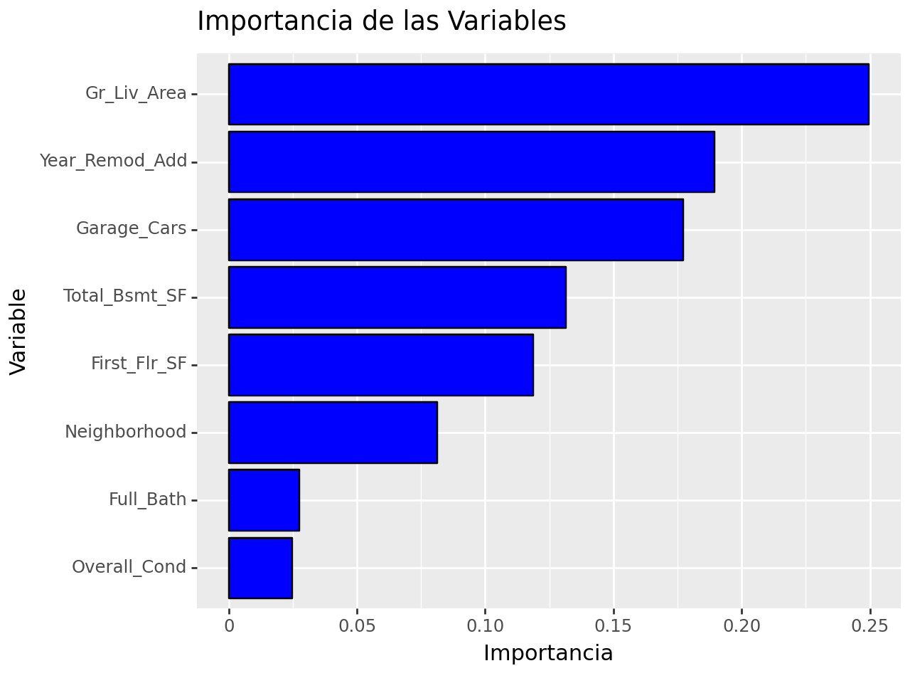
<Figure Size: (640 x 480)># N permutaciones
n_permutations = 50
performance_losses = []
for i in range(ames_x_test[columnas_seleccionadas].shape[1]):
loss = []
for j in range(n_permutations):
ames_x_test_permuted = ames_x_test[columnas_seleccionadas].copy()
ames_x_test_permuted.iloc[:, i] = np.random.permutation(ames_x_test_permuted.iloc[:, i])
y_pred_permuted = final_rf_pipeline.predict(ames_x_test_permuted)
mse_permuted = mean_squared_error(ames_y_test, y_pred_permuted)
loss.append(mse_permuted)
performance_losses.append(loss)
performance_losses = performance_losses/np.sum(performance_losses, axis=0)
mean_losses = np.mean(performance_losses, axis=1)
std_losses = np.std(performance_losses, axis=1)importance_df = pd.DataFrame({
'Variable': columnas_seleccionadas,
'Mean_Loss': mean_losses,
'Std_Loss': std_losses
})(
importance_df >>
mutate(
ymin = _.Mean_Loss - _.Std_Loss,
ymax = _.Mean_Loss + _.Std_Loss) >>
ggplot(aes(x = 'reorder(Variable, Mean_Loss)', y = "Mean_Loss")) +
geom_errorbar(aes(ymin='ymin', ymax='ymax'),
width=0.2, position=position_dodge(0.9)) +
geom_point(alpha = 0.65) +
labs(title='Importancia de las Variables', x='Variable', y='Importancia') +
coord_flip()
)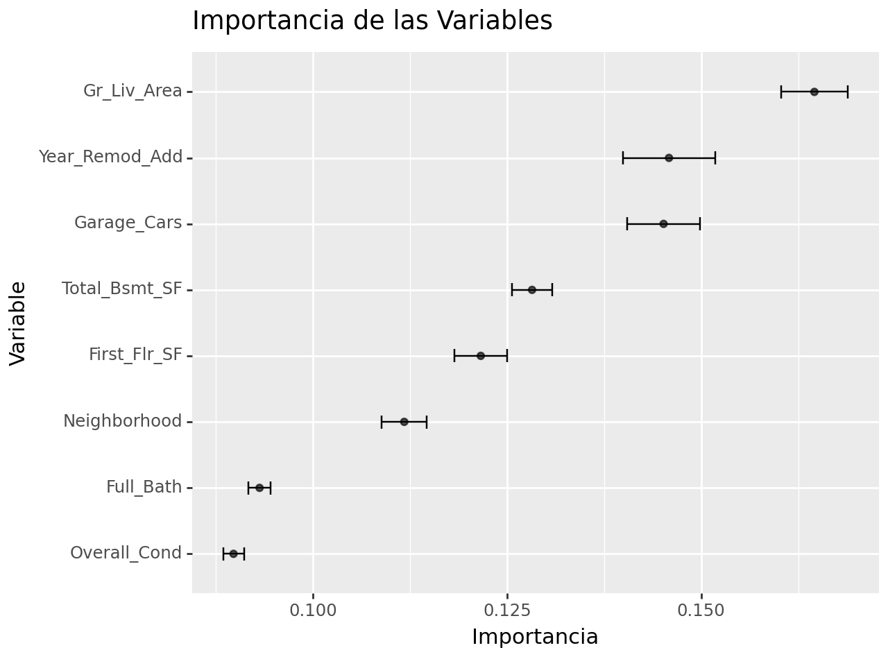
<Figure Size: (640 x 480)>importances = final_rf_pipeline.named_steps['regressor'].feature_importances_
columns = final_rf_pipeline["preprocessor"].get_feature_names_out()(
pd.DataFrame({'feature': columns, 'Importance': importances}) >>
ggplot(aes(x= 'reorder(feature, Importance)', y='Importance')) +
geom_bar(stat='identity', fill='blue', color = "black") +
labs(title='Importancia de las Variables', x='Variable', y='Importancia') +
coord_flip()
)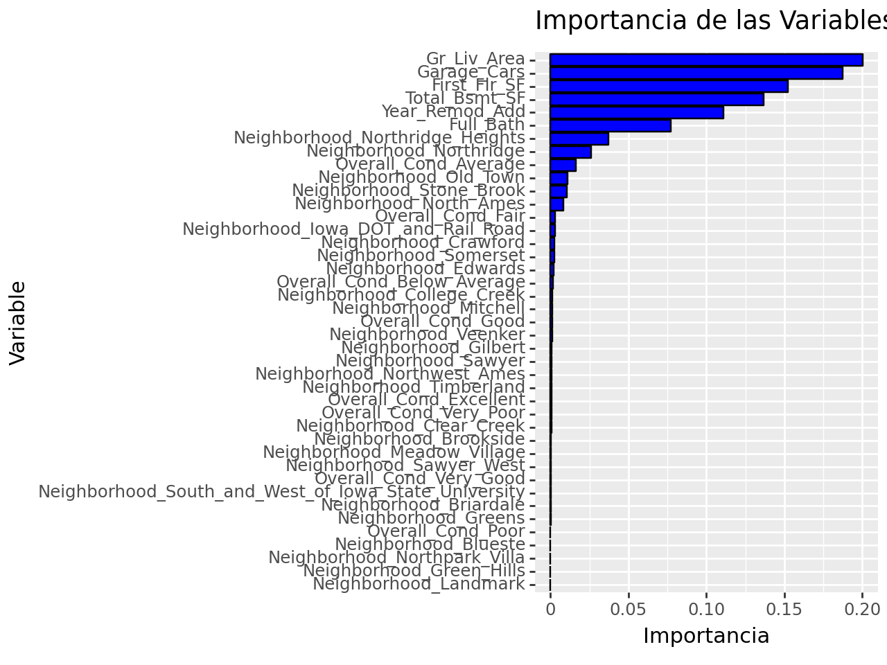
<Figure Size: (640 x 480)>11. Conclusión final
La conclusión, habiendo probado modelos con Regresión Lineal, K Nearest Neighbor y Random Forest, es que KNN nos proporciona unas mejores métricas de desempeño, sin embargo, Random Forest se acerca bastante en su poder predictivo, y nos proporciona información muy importante, respecto de la importancia de las variables para el modelo.